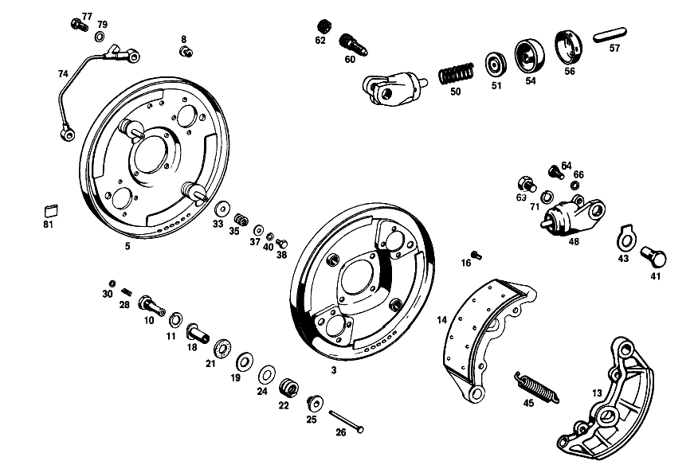

| № | Артикул | Название | Кол. | Примечание | Ограничение |
|---|---|---|---|---|---|
| 3 | A 111 420 02 16 | ПЛАСТИНА ТОРМ. МЕХ-МА | - | ||
| 5 | A 121 420 00 16 | ПЛАСТИНА ТОРМ. МЕХ-МА | 1 | СЛЕВА | |
| 8 | A 111 997 00 86 | ЗАГЛУШКА | 4 | ||
| 10 | A 180 421 06 71 | БОЛТ | 4 | ТОРМОЗН. ТРУБОПРОВОД НА ПЕРЕГОРОДКЕ | |
| 11 | N 912004 014100 | Пружинное кольцо | 4 | ||
| 13 | A 110 420 11 20 | ТОРМОЗН. КОЛОДКА | - | ||
| 13 | A 110 420 25 20 | ТОРМОЗН. КОЛОДКА | 4 | ||
| 14 | A 180 421 07 10 | - ТОРМ. КОЛОДКА | - | ||
| 14 | A 180 421 10 10 | - ТОРМ. КОЛОДКА | 4 | TO 180 420 09 20 | |
| 16 | A 183 990 02 95 | - ЗАКЛЕПКА | 40 | TO 180 420 09 20 | |
| 18 | A 180 421 01 37 | ВТУЛКА РЕГУЛИРОВОЧНАЯ | 4 | РЕГУЛИРОВКА ТОРМОЗНОЙ КОЛОДКИ | |
| 19 | A 180 990 24 40 | Диск | 8 | РЕГУЛИРОВКА ТОРМОЗНОЙ КОЛОДКИ | |
| 21 | A 180 421 00 32 | ФРИКЦ.ШАЙБА | - | ||
| 21 | A 180 421 01 32 | ФРИКЦ.ШАЙБА | 8 | РЕГУЛИРОВКА ТОРМОЗНОЙ КОЛОДКИ | |
| 22 | A 194 993 00 01 | ПРУЖИНА | 4 | РЕГУЛИРОВКА ТОРМОЗНОЙ КОЛОДКИ | |
| 24 | A 180 990 13 40 | ШАЙБА | NB | РЕГУЛИРОВКА ТОРМОЗНОЙ КОЛОДКИ | |
| 25 | A 180 421 03 71 | БОЛТ | 4 | РЕГУЛИРОВКА ТОРМОЗНОЙ КОЛОДКИ | |
| 26 | A 180 421 00 74 | БОЛТ | 4 | РЕГУЛИРОВКА ТОРМОЗНОЙ КОЛОДКИ | |
| 28 | A 180 993 23 01 | ПРУЖИНА | 4 | РЕГУЛИРОВКА ТОРМОЗНОЙ КОЛОДКИ | |
| 30 | N 000125 005300 | ШАЙБА | 4 | РЕГУЛИРОВКА ТОРМОЗНОЙ КОЛОДКИ | |
| 33 | A 110 990 05 40 | ШАЙБА | 4 | ||
| 35 | A 180 993 18 01 | ПРУЖИНА | 4 | ||
| 37 | N 009021 005100 | Шайба | 4 | ||
| 38 | N 000933 005011 | Винт | 4 | ||
| 40 | N 000127 005200 | КОЛЬЦО ПРУЖИННОЕ | 4 | ||
| 41 | A 110 421 02 18 | БОЛТ | 4 | ||
| 43 | A 110 994 01 16 | ПРЕДОХРАНИТЕЛЬ | 4 | ||
| 45 | A 180 993 25 10 | ПРУЖИНА | 4 | ||
| 48 | A 001 420 33 18 | ЦИЛИНДР КОЛЁСНЫЙ | 2 | СЛЕВА | |
| 50 | A 000 421 10 90 | - ПРУЖИНА | 4 | ||
| 51 | A 000 421 14 89 | - НАПОЛНИТ. ЭЛЕМЕНТ | 4 | ||
| 54 | A 000 421 10 87 | - КОЛПАЧОК | 4 | [402] БОЛЬШЕ НЕ ПОСТАВЛЯЕТСЯ | |
| 56 | A 000 421 16 87 | - КОЛПАЧОК | 4 | ||
| 57 | A 000 421 09 88 | - ПАЛЕЦ НАЖИМНОЙ | 4 | ||
| 60 | A 000 420 08 55 | Клапан выпуска воздуха | 4 | ||
| 62 | A 000 421 71 87 | - КОЛПАЧОК | - | ||
| 62 | A 000 421 08 87 | - Защитный колпачок | 4 | ||
| 64 | N 000933 008131 | Винт | - | ||
| 64 | N 304017 008016 | Винт с 6-гранной головкой | 12 | ЦИЛ.КОЛЕСА НА ПАНЕЛИ ТОРМОЗ.АГРЕГ.; M8X16 | |
| 66 | N 000127 008200 | КОЛЬЦО ПРУЖИННОЕ | 12 | ЦИЛ.КОЛЕСА НА ПАНЕЛИ ТОРМОЗ.АГРЕГ. | |
| 69 | N 000961 012003 | БОЛТ | 4 | ЦИЛ.КОЛЕСА НА ПАНЕЛИ ТОРМОЗ.АГРЕГ. | |
| 71 | N 000127 012200 | Пружинное кольцо | 4 | ЦИЛ.КОЛЕСА НА ПАНЕЛИ ТОРМОЗ.АГРЕГ. | |
| 74 | A 111 420 23 28 | ПРОВОД | 1 | СЛЕВА | |
| 77 | A 000 428 04 26 | ПОЛЫЙ БОЛТ | 4 | ||
| 79 | A 094 990 84 07 | Уплотнительное кольцо | 8 | ||
| 81 | A 110 987 00 37 | ФИТИНГ | 2 | ||
| 85 | A 000 421 45 98 | СКОБА ТОРМОЗН. МЕХАНИЗМА | - | [056] FROM CHASSIS 040635 INSTALLED ON,SEE FOOTN.103 NOT INSTALLED ON,SEE FOOTN.104 [103] 040452, 040453, 040486, 040487, 040490, 040496- 040498, 040585- 040594, 040610- 040624, 040632, 040633. [104] 026639, 026839, 046373- 046379, 046379- 046397, 046400, 046437, 046437, 046438, 046440, 046459- 046461, 046463- 046465, 046473- 046479, 046482, 046484- 046498, 046500- 046564, 046566- 046569, 046572, 046579, 046587- 046613, 046622- 046624, 046626- 046634, 046648- 046650, 046654- 046660. [058] FROM FRONT AXLE 040871 NOT INSTALLED ON 055962-056414 [083] 014 UP TO CHASSIS 072368;021,023 UP TO CHASSIS 072233 | |
| 87 | A 000 421 46 98 | СКОБА ТОРМОЗН. МЕХАНИЗМА | - | [056] FROM CHASSIS 040635 INSTALLED ON,SEE FOOTN.103 NOT INSTALLED ON,SEE FOOTN.104 [103] 040452, 040453, 040486, 040487, 040490, 040496- 040498, 040585- 040594, 040610- 040624, 040632, 040633. [104] 026639, 026839, 046373- 046379, 046379- 046397, 046400, 046437, 046437, 046438, 046440, 046459- 046461, 046463- 046465, 046473- 046479, 046482, 046484- 046498, 046500- 046564, 046566- 046569, 046572, 046579, 046587- 046613, 046622- 046624, 046626- 046634, 046648- 046650, 046654- 046660. [058] FROM FRONT AXLE 040871 NOT INSTALLED ON 055962-056414 [083] 014 UP TO CHASSIS 072368;021,023 UP TO CHASSIS 072233 | |
| 90 | A 000 421 08 74 | - БОЛТ | 4 | ||
| 91 | A 000 421 05 73 | - предохранитель | 4 | ||
| 93 | A 000 421 00 20 | - ЗАЩИТНАЯ ПАНЕЛЬ | 2 | СНАРУЖИ | |
| 95 | A 000 421 01 20 | - ЗАЩИТНАЯ ПАНЕЛЬ | 2 | ВНУТР. | |
| 98 | A 000 428 08 01 | - ПРОВОД | 1 | LEFT TO 000 421 08 98,000 421 18 98 | |
| 100 | A 000 428 09 01 | - ПРОВОД | 1 | RIGHT TO 000 421 09 98,000 421 19 98 | |
| 102 | A 000 421 14 65 | - КЛАПАН ВЕНТИЛЯЦИИ | 2 | TO 000 421 26 98,000 421 27 98,000 421 45 98,000 421 46 98 M 10 X 1 [402] БОЛЬШЕ НЕ ПОСТАВЛЯЕТСЯ | |
| 102 | A 000 421 17 65 | - КЛАПАН ВЕНТИЛЯЦИИ | 2 | M 8 | |
| 103 | A 000 421 71 87 | - КОЛПАЧОК | - | ||
| 103 | A 000 421 08 87 | - Защитный колпачок | 2 | ||
| 105 | A 111 421 03 71 | болт | 4 | ||
| 108 | A 112 421 14 52 | РАСПОРНАЯ ШАЙБА | 1 | ПО НЕОБХОДИМОСТИ 0.50 MM [055] UP TO CHASSIS 040634 NOT INSTALLED ON,SEE FOOTN.103 INSTALLED ON,SEE FOOTN.104 [103] 040452, 040453, 040486, 040487, 040490, 040496- 040498, 040585- 040594, 040610- 040624, 040632, 040633. [104] 026639, 026839, 046373- 046379, 046379- 046397, 046400, 046437, 046437, 046438, 046440, 046459- 046461, 046463- 046465, 046473- 046479, 046482, 046484- 046498, 046500- 046564, 046566- 046569, 046572, 046579, 046587- 046613, 046622- 046624, 046626- 046634, 046648- 046650, 046654- 046660. | |
| 110 | A 115 994 07 32 | Стопорная шайба | 2 | ||
| 117 | N 000912 006024 | Цилиндрич. винт | 4 | [056] FROM CHASSIS 040635 INSTALLED ON,SEE FOOTN.103 NOT INSTALLED ON,SEE FOOTN.104 [103] 040452, 040453, 040486, 040487, 040490, 040496- 040498, 040585- 040594, 040610- 040624, 040632, 040633. [104] 026639, 026839, 046373- 046379, 046379- 046397, 046400, 046437, 046437, 046438, 046440, 046459- 046461, 046463- 046465, 046473- 046479, 046482, 046484- 046498, 046500- 046564, 046566- 046569, 046572, 046579, 046587- 046613, 046622- 046624, 046626- 046634, 046648- 046650, 046654- 046660. | |
| 119 | N 007980 006000 | Пружинное кольцо | 4 | ||
| 123 | A 111 420 62 28 | ПРОВОД | 1 | СЛЕВА [056] FROM CHASSIS 040635 INSTALLED ON,SEE FOOTN.103 NOT INSTALLED ON,SEE FOOTN.104 [103] 040452, 040453, 040486, 040487, 040490, 040496- 040498, 040585- 040594, 040610- 040624, 040632, 040633. [104] 026639, 026839, 046373- 046379, 046379- 046397, 046400, 046437, 046437, 046438, 046440, 046459- 046461, 046463- 046465, 046473- 046479, 046482, 046484- 046498, 046500- 046564, 046566- 046569, 046572, 046579, 046587- 046613, 046622- 046624, 046626- 046634, 046648- 046650, 046654- 046660. | |
| 125 | A 111 420 63 28 | ПРОВОД | 1 | СПРАВА [056] FROM CHASSIS 040635 INSTALLED ON,SEE FOOTN.103 NOT INSTALLED ON,SEE FOOTN.104 [103] 040452, 040453, 040486, 040487, 040490, 040496- 040498, 040585- 040594, 040610- 040624, 040632, 040633. [104] 026639, 026839, 046373- 046379, 046379- 046397, 046400, 046437, 046437, 046438, 046440, 046459- 046461, 046463- 046465, 046473- 046479, 046482, 046484- 046498, 046500- 046564, 046566- 046569, 046572, 046579, 046587- 046613, 046622- 046624, 046626- 046634, 046648- 046650, 046654- 046660. | |
| 127 | N 000912 006024 | Цилиндрич. винт | 4 | BRAKE LINE TO STEERING KNUCKLE [056] FROM CHASSIS 040635 INSTALLED ON,SEE FOOTN.103 NOT INSTALLED ON,SEE FOOTN.104 [103] 040452, 040453, 040486, 040487, 040490, 040496- 040498, 040585- 040594, 040610- 040624, 040632, 040633. [104] 026639, 026839, 046373- 046379, 046379- 046397, 046400, 046437, 046437, 046438, 046440, 046459- 046461, 046463- 046465, 046473- 046479, 046482, 046484- 046498, 046500- 046564, 046566- 046569, 046572, 046579, 046587- 046613, 046622- 046624, 046626- 046634, 046648- 046650, 046654- 046660. | |
| 127 | N 000912 006024 | Цилиндрич. винт | 4 | BRAKE LINE TO STEERING KNUCKLE | |
| 127 | N 000912 006024 | Цилиндрич. винт | 2 | BRAKE LINE TO STEERING KNUCKLE | |
| 129 | N 007980 006000 | Пружинное кольцо | 4 | BRAKE LINE TO STEERING KNUCKLE | |
| 131 | A 112 428 00 81 | ВСТАВКА РЕЗИНОВАЯ | 2 | (ЗАЩИТНЫЙ ШЛАНГ) [055] UP TO CHASSIS 040634 NOT INSTALLED ON,SEE FOOTN.103 INSTALLED ON,SEE FOOTN.104 [103] 040452, 040453, 040486, 040487, 040490, 040496- 040498, 040585- 040594, 040610- 040624, 040632, 040633. [104] 026639, 026839, 046373- 046379, 046379- 046397, 046400, 046437, 046437, 046438, 046440, 046459- 046461, 046463- 046465, 046473- 046479, 046482, 046484- 046498, 046500- 046564, 046566- 046569, 046572, 046579, 046587- 046613, 046622- 046624, 046626- 046634, 046648- 046650, 046654- 046660. | |
| 138 | A 112 420 12 17 | ПЛАСТИНА ТОРМ. МЕХ-МА | 1 | СЛЕВА [402] БОЛЬШЕ НЕ ПОСТАВЛЯЕТСЯ [013] 014 UP TO REAR AXLE 067223 [015] 021 UP TO REAR AXLE 000853 | |
| 140 | A 110 420 26 17 | ПЛАСТИНА ТОРМ. МЕХ-МА | 1 | СЛЕВА [004] 014 UP TO CHASSIS 026840 NOT INSTALLED ON 026639,026839 [014] 014 FROM REAR AXLE 067224 [016] 021 FROM REAR AXLE 000854-003362 [022] 021 UP TO CHASSIS 026883 NOT INSTALLED ON 026711 | |
| 142 | A 110 420 30 17 | ПЛАСТИНА ТОРМ. МЕХ-МА | 1 | СЛЕВА [005] 014 FROM CHASSIS 026841 INSTALLED ON 026639,026839 [010] 014 FROM REAR AXLE 000001 [018] 021 FROM REAR AXLE 003363 [023] 021 FROM CHASSIS 026884 INSTALLED ON 026711 | |
| 146 | A 110 423 01 18 | БОЛТ КРЫШКИ ПОРДШИПНИКА | 2 | [013] 014 UP TO REAR AXLE 067223 [015] 021 UP TO REAR AXLE 000853 [005] 014 FROM CHASSIS 026841 INSTALLED ON 026639,026839 [010] 014 FROM REAR AXLE 000001 [018] 021 FROM REAR AXLE 003363 | |
| 146 | A 110 423 01 18 | БОЛТ КРЫШКИ ПОРДШИПНИКА | 2 | [021] FROM CHASSIS 009875-026840 INSTALLED ON,SEE FOOTN.101 NOT INSTALLED ON 026639,026839 [101] 009714- 009733, 009759- 009780, 009786- 009794, 009797- 009800, 009855- 009861, 009863- 009873. | |
| 151 | A 110 420 19 20 | ТОРМОЗН. КОЛОДКА | 4 | СПЕРЕДИ И СЗАДИ [004] 014 UP TO CHASSIS 026840 NOT INSTALLED ON 026639,026839 [014] 014 FROM REAR AXLE 067224 [016] 021 FROM REAR AXLE 000854-003362 [022] 021 UP TO CHASSIS 026883 NOT INSTALLED ON 026711 | |
| 154 | A 110 420 18 20 | ТОРМОЗН. КОЛОДКА | - | ||
| 154 | A 110 420 27 20 | ТОРМОЗН. КОЛОДКА | 2 | СПЕРЕДИ [005] 014 FROM CHASSIS 026841 INSTALLED ON 026639,026839 [010] 014 FROM REAR AXLE 000001 [018] 021 FROM REAR AXLE 003363 [023] 021 FROM CHASSIS 026884 INSTALLED ON 026711 | |
| 156 | A 110 420 17 20 | ТОРМОЗН. КОЛОДКА | - | ||
| 156 | A 110 420 26 20 | ТОРМОЗН. КОЛОДКА | 2 | СЗАДИ [005] 014 FROM CHASSIS 026841 INSTALLED ON 026639,026839 [010] 014 FROM REAR AXLE 000001 [018] 021 FROM REAR AXLE 003363 [023] 021 FROM CHASSIS 026884 INSTALLED ON 026711 | |
| 158 | A 180 423 05 50 | ВТУЛКА | 4 | РЕГУЛИРОВКА ТОРМОЗНОЙ КОЛОДКИ [013] 014 UP TO REAR AXLE 067223 [015] 021 UP TO REAR AXLE 000853 | |
| 159 | A 180 990 24 40 | Диск | 8 | РЕГУЛИРОВКА ТОРМОЗНОЙ КОЛОДКИ [013] 014 UP TO REAR AXLE 067223 [015] 021 UP TO REAR AXLE 000853 | |
| 161 | A 180 421 00 32 | ФРИКЦ.ШАЙБА | - | ||
| 161 | A 180 421 01 32 | ФРИКЦ.ШАЙБА | 8 | РЕГУЛИРОВКА ТОРМОЗНОЙ КОЛОДКИ [013] 014 UP TO REAR AXLE 067223 [015] 021 UP TO REAR AXLE 000853 | |
| 163 | A 194 993 00 01 | ПРУЖИНА | 4 | РЕГУЛИРОВКА ТОРМОЗНОЙ КОЛОДКИ [013] 014 UP TO REAR AXLE 067223 [015] 021 UP TO REAR AXLE 000853 | |
| 165 | A 180 990 13 40 | ШАЙБА | NB | РЕГУЛИРОВКА ТОРМОЗНОЙ КОЛОДКИ [013] 014 UP TO REAR AXLE 067223 [015] 021 UP TO REAR AXLE 000853 | |
| 168 | A 180 421 03 71 | БОЛТ | 4 | РЕГУЛИРОВКА ТОРМОЗНОЙ КОЛОДКИ [013] 014 UP TO REAR AXLE 067223 [015] 021 UP TO REAR AXLE 000853 | |
| 170 | A 110 423 04 74 | БОЛТ | 4 | ТОРМОЗНАЯ КОЛОДКА К ПЛАСТИНЕ СУППОРТА ТОРМОЗНОГО МЕХАНИЗМА [004] 014 UP TO CHASSIS 026840 NOT INSTALLED ON 026639,026839 [014] 014 FROM REAR AXLE 067224 [016] 021 FROM REAR AXLE 000854-003362 [022] 021 UP TO CHASSIS 026883 NOT INSTALLED ON 026711 | |
| 171 | A 110 993 06 30 | ПРУЖИНА | 4 | ТОРМОЗНАЯ КОЛОДКА К ПЛАСТИНЕ СУППОРТА ТОРМОЗНОГО МЕХАНИЗМА [004] 014 UP TO CHASSIS 026840 NOT INSTALLED ON 026639,026839 [014] 014 FROM REAR AXLE 067224 [016] 021 FROM REAR AXLE 000854-003362 [022] 021 UP TO CHASSIS 026883 NOT INSTALLED ON 026711 | |
| 173 | A 110 423 03 77 | ТАРЕЛКА | 4 | [005] 014 FROM CHASSIS 026841 INSTALLED ON 026639,026839 [010] 014 FROM REAR AXLE 000001 [018] 021 FROM REAR AXLE 003363 [023] 021 FROM CHASSIS 026884 INSTALLED ON 026711 | |
| 174 | A 110 990 05 40 | ШАЙБА | 8 | [005] 014 FROM CHASSIS 026841 INSTALLED ON 026639,026839 [010] 014 FROM REAR AXLE 000001 [018] 021 FROM REAR AXLE 003363 [023] 021 FROM CHASSIS 026884 INSTALLED ON 026711 | |
| 176 | A 120 993 06 01 | ПРУЖИНА | 4 | [005] 014 FROM CHASSIS 026841 INSTALLED ON 026639,026839 [010] 014 FROM REAR AXLE 000001 [018] 021 FROM REAR AXLE 003363 [023] 021 FROM CHASSIS 026884 INSTALLED ON 026711 | |
| 179 | N 000433 008406 | Шайба | 4 | [005] 014 FROM CHASSIS 026841 INSTALLED ON 026639,026839 [010] 014 FROM REAR AXLE 000001 [018] 021 FROM REAR AXLE 003363 [023] 021 FROM CHASSIS 026884 INSTALLED ON 026711 | |
| 183 | A 110 993 09 10 | ПРУЖИНА | 2 | [004] 014 UP TO CHASSIS 026840 NOT INSTALLED ON 026639,026839 [014] 014 FROM REAR AXLE 067224 [016] 021 FROM REAR AXLE 000854-003362 [022] 021 UP TO CHASSIS 026883 NOT INSTALLED ON 026711 | |
| 185 | A 110 993 12 10 | ПРУЖИНА | 2 | [005] 014 FROM CHASSIS 026841 INSTALLED ON 026639,026839 [010] 014 FROM REAR AXLE 000001 [018] 021 FROM REAR AXLE 003363 [023] 021 FROM CHASSIS 026884 INSTALLED ON 026711 | |
| 188 | A 136 423 00 92 | ПРУЖИНА | 2 | РЫЧАГ ТОРМОЗА [013] 014 UP TO REAR AXLE 067223 [015] 021 UP TO REAR AXLE 000853 [005] 014 FROM CHASSIS 026841 INSTALLED ON 026639,026839 [010] 014 FROM REAR AXLE 000001 [018] 021 FROM REAR AXLE 003363 | |
| 188 | A 136 423 00 92 | ПРУЖИНА | 2 | РЫЧАГ ТОРМОЗА [023] 021 FROM CHASSIS 026884 INSTALLED ON 026711 | |
| 190 | A 110 993 06 20 | ПРУЖИНА | 2 | РЫЧАГ ТОРМОЗА [004] 014 UP TO CHASSIS 026840 NOT INSTALLED ON 026639,026839 [014] 014 FROM REAR AXLE 067224 [016] 021 FROM REAR AXLE 000854-003362 [022] 021 UP TO CHASSIS 026883 NOT INSTALLED ON 026711 | |
| 192 | A 121 993 03 10 | ПРУЖИНА | 2 | [004] 014 UP TO CHASSIS 026840 NOT INSTALLED ON 026639,026839 [014] 014 FROM REAR AXLE 067224 [016] 021 FROM REAR AXLE 000854-003362 [022] 021 UP TO CHASSIS 026883 NOT INSTALLED ON 026711 | |
| 195 | A 110 423 01 87 | КОЛПАЧОК | 2 | [004] 014 UP TO CHASSIS 026840 NOT INSTALLED ON 026639,026839 [014] 014 FROM REAR AXLE 067224 [016] 021 FROM REAR AXLE 000854-003362 [022] 021 UP TO CHASSIS 026883 NOT INSTALLED ON 026711 | |
| 205 | A 001 420 04 18 | ЦИЛИНДР КОЛЁСНЫЙ | 2 | [004] 014 UP TO CHASSIS 026840 NOT INSTALLED ON 026639,026839 | |
| 210 | A 000 421 15 87 | - КОЛПАЧОК | - | ||
| 210 | A 000 421 03 48 | - КОЛПАЧОК | 4 | [005] 014 FROM CHASSIS 026841 INSTALLED ON 026639,026839 | |
| 211 | A 000 420 08 55 | - Клапан выпуска воздуха | 2 | ||
| 212 | A 000 421 71 87 | - КОЛПАЧОК | - | ||
| 212 | A 000 421 08 87 | - Защитный колпачок | 2 | ||
| 214 | A 180 421 02 88 | ПАЛЕЦ НАЖИМНОЙ | 4 | [013] 014 UP TO REAR AXLE 067223 | |
| 216 | A 000 993 11 26 | ПРУЖИНА ДИСКОВАЯ | 16 | [013] 014 UP TO REAR AXLE 067223 | |
| 219 | A 180 421 03 88 | ПАЛЕЦ НАЖИМНОЙ | 4 | [013] 014 UP TO REAR AXLE 067223 | |
| 220 | A 000 421 09 88 | ПАЛЕЦ НАЖИМНОЙ | 4 | [004] 014 UP TO CHASSIS 026840 NOT INSTALLED ON 026639,026839 [014] 014 FROM REAR AXLE 067224 [022] 021 UP TO CHASSIS 026883 NOT INSTALLED ON 026711 [017] 021 UP TO REAR AXLE 003362 | |
| 223 | A 000 421 04 88 | ПАЛЕЦ НАЖИМНОЙ | 4 | [005] 014 FROM CHASSIS 026841 INSTALLED ON 026639,026839 [010] 014 FROM REAR AXLE 000001 [018] 021 FROM REAR AXLE 003363 [023] 021 FROM CHASSIS 026884 INSTALLED ON 026711 | |
| 225 | N 000933 008130 | Винт | - | ||
| 225 | N 304017 008039 | Винт с 6-гранной головкой | 4 | ЦИЛ.КОЛЕСА НА ПАНЕЛИ ТОРМОЗ.АГРЕГ. | |
| 226 | N 000127 008203 | Пружинное кольцо | 4 | ЦИЛ.КОЛЕСА НА ПАНЕЛИ ТОРМОЗ.АГРЕГ. | |
| 228 | A 112 423 02 74 | БОЛТ | 4 | ТОРМОЗНАЯ КОЛОДКА К ПЛАСТИНЕ СУППОРТА ТОРМОЗНОГО МЕХАНИЗМА [013] 014 UP TO REAR AXLE 067223 [015] 021 UP TO REAR AXLE 000853 | |
| 229 | A 112 993 43 01 | ПРУЖИНА | 4 | ТОРМОЗНАЯ КОЛОДКА К ПЛАСТИНЕ СУППОРТА ТОРМОЗНОГО МЕХАНИЗМА [013] 014 UP TO REAR AXLE 067223 [015] 021 UP TO REAR AXLE 000853 | |
| 231 | N 009021 005100 | Шайба | 4 | ТОРМОЗНАЯ КОЛОДКА К ПЛАСТИНЕ СУППОРТА ТОРМОЗНОГО МЕХАНИЗМА [013] 014 UP TO REAR AXLE 067223 [015] 021 UP TO REAR AXLE 000853 | |
| 233 | A 110 420 13 42 | РЫЧАГ ТОРМОЗА | 1 | СЛЕВА [013] 014 UP TO REAR AXLE 067223 [015] 021 UP TO REAR AXLE 000853 [005] 014 FROM CHASSIS 026841 INSTALLED ON 026639,026839 [010] 014 FROM REAR AXLE 000001 [018] 021 FROM REAR AXLE 003363 | |
| 233 | A 110 420 13 42 | РЫЧАГ ТОРМОЗА | 1 | СЛЕВА [023] 021 FROM CHASSIS 026884 INSTALLED ON 026711 | |
| 235 | A 110 420 09 42 | РЫЧАГ ТОРМОЗА | 1 | СЛЕВА [004] 014 UP TO CHASSIS 026840 NOT INSTALLED ON 026639,026839 [014] 014 FROM REAR AXLE 067224 [016] 021 FROM REAR AXLE 000854-003362 [022] 021 UP TO CHASSIS 026883 NOT INSTALLED ON 026711 | |
| 238 | A 110 420 00 74 | ТЯГА | 2 | [004] 014 UP TO CHASSIS 026840 NOT INSTALLED ON 026639,026839 [014] 014 FROM REAR AXLE 067224 [016] 021 FROM REAR AXLE 000854-003362 [022] 021 UP TO CHASSIS 026883 NOT INSTALLED ON 026711 | |
| 239 | A 001 997 34 46 | Уплотнительное кольцо | 2 | ПЛАСТИНА ТОРМОЗНОГО ЩИТА К ЗАДНЕМУ МОСТУ | |
| 241 | A 110 423 00 79 | уплотнение | 2 | ПЛАСТИНА ТОРМОЗНОГО ЩИТА К ЗАДНЕМУ МОСТУ | |
| 242 | A 001 997 47 46 | Уплотнительное кольцо | 2 | ПЛАСТИНА ТОРМОЗНОГО ЩИТА К ЗАДНЕМУ МОСТУ | |
| 244 | A 108 357 00 71 | Болт призонный | 12 | ПЛАСТИНА ТОРМОЗНОГО ЩИТА К ЗАДНЕМУ МОСТУ | |
| 245 | N 000127 008203 | Пружинное кольцо | 12 | ПЛАСТИНА ТОРМОЗНОГО ЩИТА К ЗАДНЕМУ МОСТУ | |
| 247 | N 000934 008010 | Гайка | - | ||
| 247 | N 304032 008006 | Шестигранная гайка | 12 | ПЛАСТИНА ТОРМОЗНОГО ЩИТА К ЗАДНЕМУ МОСТУ; M8 | |
| 249 | A 110 993 04 01 | пружина | 2 | [013] 014 UP TO REAR AXLE 067223 [015] 021 UP TO REAR AXLE 000853 [005] 014 FROM CHASSIS 026841 INSTALLED ON 026639,026839 [010] 014 FROM REAR AXLE 000001 [018] 021 FROM REAR AXLE 003363 | |
| 249 | A 110 993 04 01 | пружина | 2 | [023] 021 FROM CHASSIS 026884 INSTALLED ON 026711 | |
| 250 | A 120 990 06 40 | ШАЙБА | 2 | [013] 014 UP TO REAR AXLE 067223 [015] 021 UP TO REAR AXLE 000853 [005] 014 FROM CHASSIS 026841 INSTALLED ON 026639,026839 [010] 014 FROM REAR AXLE 000001 [018] 021 FROM REAR AXLE 003363 | |
| 250 | A 120 990 06 40 | ШАЙБА | 2 | [023] 021 FROM CHASSIS 026884 INSTALLED ON 026711 | |
| 252 | A 120 423 01 56 | КОЛЬЦО | 2 | [013] 014 UP TO REAR AXLE 067223 [015] 021 UP TO REAR AXLE 000853 [005] 014 FROM CHASSIS 026841 INSTALLED ON 026639,026839 [010] 014 FROM REAR AXLE 000001 [018] 021 FROM REAR AXLE 003363 | |
| 252 | A 120 423 01 56 | КОЛЬЦО | 2 | [023] 021 FROM CHASSIS 026884 INSTALLED ON 026711 | |
| 253 | A 120 990 07 40 | ШАЙБА | 2 | [013] 014 UP TO REAR AXLE 067223 [015] 021 UP TO REAR AXLE 000853 [005] 014 FROM CHASSIS 026841 INSTALLED ON 026639,026839 [010] 014 FROM REAR AXLE 000001 [018] 021 FROM REAR AXLE 003363 | |
| 253 | A 120 990 07 40 | ШАЙБА | 2 | [023] 021 FROM CHASSIS 026884 INSTALLED ON 026711 | |
| 255 | N 000933 008131 | Винт | - | ||
| 255 | N 304017 008016 | Винт с 6-гранной головкой | 2 | M8X16 [013] 014 UP TO REAR AXLE 067223 [015] 021 UP TO REAR AXLE 000853 [005] 014 FROM CHASSIS 026841 INSTALLED ON 026639,026839 [010] 014 FROM REAR AXLE 000001 [018] 021 FROM REAR AXLE 003363 | |
| 255 | N 304017 008016 | Винт с 6-гранной головкой | 2 | M8X16 [023] 021 FROM CHASSIS 026884 INSTALLED ON 026711 | |
| 257 | N 000127 008200 | КОЛЬЦО ПРУЖИННОЕ | 2 | [013] 014 UP TO REAR AXLE 067223 [015] 021 UP TO REAR AXLE 000853 [005] 014 FROM CHASSIS 026841 INSTALLED ON 026639,026839 [010] 014 FROM REAR AXLE 000001 [018] 021 FROM REAR AXLE 003363 | |
| 257 | N 000127 008200 | КОЛЬЦО ПРУЖИННОЕ | 2 | [023] 021 FROM CHASSIS 026884 INSTALLED ON 026711 | |
| 258 | A 183 423 06 74 | БОЛТ | 2 | [013] 014 UP TO REAR AXLE 067223 [015] 021 UP TO REAR AXLE 000853 [005] 014 FROM CHASSIS 026841 INSTALLED ON 026639,026839 [010] 014 FROM REAR AXLE 000001 [018] 021 FROM REAR AXLE 003363 | |
| 258 | A 183 423 06 74 | БОЛТ | 2 | [023] 021 FROM CHASSIS 026884 INSTALLED ON 026711 | |
| 259 | N 000125 008407 | ШАЙБА | 2 | [013] 014 UP TO REAR AXLE 067223 [015] 021 UP TO REAR AXLE 000853 [005] 014 FROM CHASSIS 026841 INSTALLED ON 026639,026839 [010] 014 FROM REAR AXLE 000001 [018] 021 FROM REAR AXLE 003363 | |
| 259 | N 000125 008407 | ШАЙБА | 2 | [023] 021 FROM CHASSIS 026884 INSTALLED ON 026711 | |
| 262 | A 110 423 00 74 | БОЛТ | 2 | [004] 014 UP TO CHASSIS 026840 NOT INSTALLED ON 026639,026839 [014] 014 FROM REAR AXLE 067224 [016] 021 FROM REAR AXLE 000854-003362 [022] 021 UP TO CHASSIS 026883 NOT INSTALLED ON 026711 | |
| 264 | A 110 423 01 51 | ДИСТАНЦИОННОЕ КОЛЬЦО | 2 | [004] 014 UP TO CHASSIS 026840 NOT INSTALLED ON 026639,026839 [014] 014 FROM REAR AXLE 067224 [016] 021 FROM REAR AXLE 000854-003362 [023] 021 FROM CHASSIS 026884 INSTALLED ON 026711 | |
| 265 | A 111 990 08 40 | Диск | 1 | ПО НЕОБХОДИМОСТИ 0.50 MM [013] 014 UP TO REAR AXLE 067223 [015] 021 UP TO REAR AXLE 000853 [005] 014 FROM CHASSIS 026841 INSTALLED ON 026639,026839 [010] 014 FROM REAR AXLE 000001 [018] 021 FROM REAR AXLE 003363 | |
| 265 | A 111 990 08 40 | Диск | 1 | ПО НЕОБХОДИМОСТИ 0.50 MM [023] 021 FROM CHASSIS 026884 INSTALLED ON 026711 | |
| 267 | A 181 990 00 14 | БОЛТ | 2 | [013] 014 UP TO REAR AXLE 067223 [015] 021 UP TO REAR AXLE 000853 [005] 014 FROM CHASSIS 026841 INSTALLED ON 026639,026839 [010] 014 FROM REAR AXLE 000001 [018] 021 FROM REAR AXLE 003363 | |
| 267 | A 181 990 00 14 | БОЛТ | 2 | ||
| 269 | N 912004 012100 | Пружинное кольцо | 2 | [013] 014 UP TO REAR AXLE 067223 [015] 021 UP TO REAR AXLE 000853 [005] 014 FROM CHASSIS 026841 INSTALLED ON 026639,026839 [010] 014 FROM REAR AXLE 000001 [018] 021 FROM REAR AXLE 003363 | |
| 269 | N 912004 012100 | Пружинное кольцо | 2 | [023] 021 FROM CHASSIS 026884 INSTALLED ON 026711 | |
| 271 | A 110 420 07 90 | НАПРАВЛЯЮЩАЯ | 2 | ||
| 273 | A 094 990 68 10 | Пружинное кольцо | 4 | ||
| 275 | N 000934 006007 | Гайка | 4 | ||
| 278 | A 110 427 02 42 | ШКИВ ТРОСИКА | - | [415] ПРИМЕЧ. ПО ЗАМЕНЕ ПРИМЕНИМО ТОЛЬКО ДЛЯ СТОЯЩИХ РЯДОМ ПОЗИЦИЙ | |
| 280 | A 187 427 01 53 | РАСПОРН. ТРУБКА | - | ||
| 281 | A 187 427 00 52 | РАСПОРНАЯ ШАЙБА | 4 | ||
| 283 | A 110 427 00 74 | БОЛТ | 2 | ||
| 285 | A 110 994 01 01 | ПРЕДОХРАНИТЕЛЬ | 2 | ||
| 287 | N 000934 006007 | Гайка | 2 | ||
| 291 | A 001 430 11 01 | ГЛАВНЫЙ ЦИЛИНДР | 1 | [005] 014 FROM CHASSIS 026841 INSTALLED ON 026639,026839 | |
| 293 | A 000 431 31 93 | - ПРУЖИНА | 1 | с SPRING RETAINER [402] БОЛЬШЕ НЕ ПОСТАВЛЯЕТСЯ [005] 014 FROM CHASSIS 026841 INSTALLED ON 026639,026839 | |
| 296 | A 000 431 17 76 | - ШАЙБА | 1 | [402] БОЛЬШЕ НЕ ПОСТАВЛЯЕТСЯ [005] 014 FROM CHASSIS 026841 INSTALLED ON 026639,026839 | |
| 298 | A 000 994 18 35 | - Пруж. стопорное кольцо | 1 | [005] 014 FROM CHASSIS 026841 INSTALLED ON 026639,026839 | |
| 299 | A 000 431 18 87 | - КОЛПАЧОК | 1 | [417] БОЛЬШЕ НЕ ПОСТАВЛЯЕТСЯ, ЗАКАЗЫВАТЬ КОМПЛЕКТ ПОСТАВКИ | |
| 300 | A 000 420 10 55 | - Клапан выпуска воздуха | 1 | ||
| 301 | A 000 421 71 87 | - КОЛПАЧОК | - | ||
| 301 | A 000 421 08 87 | - Защитный колпачок | 1 | ||
| 303 | A 000 431 08 34 | СЕТКА | 1 | ||
| 305 | A 094 990 95 07 | Уплотнительное кольцо | 1 | Рулевое управление: Влево | |
| 305 | A 094 990 95 07 | Уплотнительное кольцо | 2 | Рулевое управление: Вправо | |
| 306 | A 000 990 21 88 | КОЛЬЦ. ЭЛЕМЕНТ | 1 | Рулевое управление: Вправо [402] БОЛЬШЕ НЕ ПОСТАВЛЯЕТСЯ | |
| 308 | A 000 428 08 26 | ПОЛЫЙ БОЛТ | 1 | Рулевое управление: Вправо [402] БОЛЬШЕ НЕ ПОСТАВЛЯЕТСЯ | |
| 310 | A 000 428 01 32 | ЗАГЛУШКА РЕЗЬБОВАЯ | 2 | Рулевое управление: Вправо | |
| 312 | A 111 430 06 82 | ШТОК ПОРШНЯ | 1 | ||
| 314 | A 111 295 01 50 | - втулка | 1 | ||
| 315 | A 000 431 21 02 | Бак | 1 | Рулевое управление: Влево | |
| 317 | A 000 431 23 02 | БАЧОК | 1 | 0.35 L. Рулевое управление: Вправо [005] 014 FROM CHASSIS 026841 INSTALLED ON 026639,026839 | |
| 318 | A 000 431 43 34 | - Сетка | 1 | ||
| 319 | A 000 431 54 33 | - Запорная крышка | 1 | ||
| 321 | A 000 997 29 40 | - Уплотнительное кольцо | 1 | ||
| 323 | A 002 997 67 82 | ШЛАНГ | 1 | Рулевое управление: Вправо [004] 014 UP TO CHASSIS 026840 NOT INSTALLED ON 026639,026839 [404] ЗАКАЗЫВАТЬ ПОГОННЫМИ МЕТРАМИ | |
| 323 | A 002 997 67 82 | ШЛАНГ | 1 | Рулевое управление: Вправо [005] 014 FROM CHASSIS 026841 INSTALLED ON 026639,026839 [404] ЗАКАЗЫВАТЬ ПОГОННЫМИ МЕТРАМИ | |
| 326 | A 000 431 17 40 | ДЕРЖАТЕЛЬ | 1 | РАСШИРИТ. БАЧОК Рулевое управление: Вправо [005] 014 FROM CHASSIS 026841 INSTALLED ON 026639,026839 | |
| 331 | A 000 430 23 81 | КЛАПАН | 1 | 0.8 KG/CM2 [005] 014 FROM CHASSIS 026841 INSTALLED ON 026639,026839 | |
| 333 | A 000 430 24 81 | - КЛАПАН | 1 | [005] 014 FROM CHASSIS 026841 INSTALLED ON 026639,026839 | |
| 334 | A 000 431 55 93 | - ПРУЖИНА | 1 | [005] 014 FROM CHASSIS 026841 INSTALLED ON 026639,026839 [417] БОЛЬШЕ НЕ ПОСТАВЛЯЕТСЯ, ЗАКАЗЫВАТЬ КОМПЛЕКТ ПОСТАВКИ | |
| 335 | N 007603 014106 | - Уплотнительное кольцо | 1 | 14X20\-CU [005] 014 FROM CHASSIS 026841 INSTALLED ON 026639,026839 | |
| 336 | N 000472 016000 | - Стопорное кольцо | 1 | [005] 014 FROM CHASSIS 026841 INSTALLED ON 026639,026839 | |
| 339 | A 123 420 55 28 | Провод | 1 | FROM BRAKE MASTER CYLINDER TO LEFT FRONT WHEEL Рулевое управление: Влево [409] ПРИ МОНТАЖЕ ПОДОГНАТЬ ПО МЕСТУ [007] 021 FROM CHASSIS 026651 [028] 014 FROM CHASSIS 016976 INSTALLED ON,SEE FOOTN.102 NOT INSTALLED ON 017103 [102] 016926, 016928, 016932, 016959, 016961- 016963, 016965, 016966, 016968- 016970, 016972- 016974. | |
| 341 | A 123 420 72 28 | Провод | 1 | FROM BRAKE MASTER CYLINDER TO RIGHT FRONT WHEEL Рулевое управление: Влево [409] ПРИ МОНТАЖЕ ПОДОГНАТЬ ПО МЕСТУ [007] 021 FROM CHASSIS 026651 [028] 014 FROM CHASSIS 016976 INSTALLED ON,SEE FOOTN.102 NOT INSTALLED ON 017103 [102] 016926, 016928, 016932, 016959, 016961- 016963, 016965, 016966, 016968- 016970, 016972- 016974. | |
| 344 | A 123 420 83 28 | Провод | 1 | FROM MASTER BRAKE CYLINDER TO REAR DISTRIBUTOR Рулевое управление: Влево [409] ПРИ МОНТАЖЕ ПОДОГНАТЬ ПО МЕСТУ | |
| 346 | A 000 428 36 24 | РАСПРЕДЕЛИТЕЛЬ | 1 | СЗАДИ СЛЕВА | |
| 348 | A 000 428 26 24 | РАСПРЕДЕЛИТЕЛЬ | 1 | Рулевое управление: Вправо | |
| 350 | A 000 431 02 65 | КЛАПАН | - | Рулевое управление: Влево | |
| 350 | A 307 553 01 07 | Клапан | 1 | TO 000 428 24 24/000 428 26 24 Рулевое управление: Влево [402] БОЛЬШЕ НЕ ПОСТАВЛЯЕТСЯ | |
| 350 | A 307 553 01 07 | Клапан | 2 | TO 000 428 24 24/000 428 26 24 Рулевое управление: Вправо [402] БОЛЬШЕ НЕ ПОСТАВЛЯЕТСЯ | |
| 351 | A 000 421 71 87 | - КОЛПАЧОК | - | Рулевое управление: Влево | |
| 351 | A 000 421 08 87 | - Защитный колпачок | 1 | TO 000 428 24 24/000 428 26 24 Рулевое управление: Влево | |
| 351 | A 000 421 08 87 | - Защитный колпачок | 2 | TO 000 428 24 24/000 428 26 24 Рулевое управление: Вправо | |
| 353 | N 000933 008166 | БОЛТ | 1 | ||
| 355 | N 000127 008200 | КОЛЬЦО ПРУЖИННОЕ | 1 | ||
| 356 | A 110 420 07 86 | ДЕРЖАТЕЛЬ | 1 | Рулевое управление: Вправо | |
| 359 | A 123 420 62 28 | Провод | 1 | СЗАДИ [409] ПРИ МОНТАЖЕ ПОДОГНАТЬ ПО МЕСТУ | |
| 360 | A 123 420 59 28 | Провод | 1 | TO LEFT REAR WHEEL [409] ПРИ МОНТАЖЕ ПОДОГНАТЬ ПО МЕСТУ | |
| 361 | A 123 420 57 28 | Провод | 1 | TO RIGHT REAR WHEEL [409] ПРИ МОНТАЖЕ ПОДОГНАТЬ ПО МЕСТУ | |
| 363 | A 126 328 01 81 | Резиновая опора | 6 | BRAKE LINE TO AXLE TUBE 20 MM | |
| 365 | A 186 997 06 81 | втулка | 2 | 28MM | |
| 368 | A 000 428 50 35 | ТОРМОЗНОЙ ШЛАНГ | 2 | СПЕРЕДИ СЛЕВА И СПРАВА [027] 014 UP TO CHASSIS 016975 NOT INSTALLED ON,SEE FOOTN.102 INSTALLED ON 017103 [102] 016926, 016928, 016932, 016959, 016961- 016963, 016965, 016966, 016968- 016970, 016972- 016974. | |
| 369 | A 110 428 00 73 | Стопорная шайба | 2 | ||
| 370 | N 000933 006103 | Винт | - | ||
| 370 | N 304017 006018 | Винт с 6-гранной головкой | 2 | M6X12 | |
| 371 | N 000137 006204 | Пружинная шайба | 2 | ||
| 373 | A 000 990 22 91 | ГАЙКОДЕРЖАТЕЛЬ | - | ||
| 373 | A 001 990 67 91 | Гайкодержатель | 2 | [415] ПРИМЕЧ. ПО ЗАМЕНЕ ПРИМЕНИМО ТОЛЬКО ДЛЯ СТОЯЩИХ РЯДОМ ПОЗИЦИЙ | |
| 374 | A 000 428 06 73 | Удерживающая пружина | 2 | ||
| 375 | A 000 428 30 35 | ТОРМОЗНОЙ ШЛАНГ | 1 | СЗАДИ СЛЕВА | |
| 377 | A 000 428 31 35 | ТОРМОЗНОЙ ШЛАНГ | - | ||
| 377 | A 000 428 26 35 | Тормозной шланг | 1 | СЗАДИ СПРАВА | |
| 379 | A 000 988 33 78 | Скоба | 4 | BRAKE LINE TO FRAME FLOOR UNIT | |
| 381 | A 000 987 09 32 | Шланг | 5 | 25 MM,BRAKE LINE TO FRAME FLOOR UNIT [404] ЗАКАЗЫВАТЬ ПОГОННЫМИ МЕТРАМИ | |
| 382 | A 110 428 01 85 | Демпферная лента | 3 | КАБЕЛЬ К ПЕРЕДНЕЙ СТЕНКЕ Рулевое управление: Вправо | |
| 385 | A 201 428 00 40 | Держатель | 2 | КАБЕЛЬ К ПЕРЕДНЕЙ СТЕНКЕ Рулевое управление: Вправо | |
| 388 | A 000 430 26 30 | УСИЛИТЕЛЬ ТОРМ. ПРИВОДА | 1 | T50/26 [005] 014 FROM CHASSIS 026841 INSTALLED ON 026639,026839 | |
| 390 | A 000 430 22 81 | - КЛАПАН | - | ||
| 390 | A 000 431 35 07 | - КЛАПАН | 1 | [031] 014 FROM CHASSIS 000050 | |
| 392 | A 000 435 14 80 | - ПРОКЛАДКА УПЛОТНИТЕЛЬНАЯ | 1 | [417] БОЛЬШЕ НЕ ПОСТАВЛЯЕТСЯ, ЗАКАЗЫВАТЬ КОМПЛЕКТ ПОСТАВКИ [402] БОЛЬШЕ НЕ ПОСТАВЛЯЕТСЯ [033] 014 FROM CHASSIS 003877 | |
| 394 | A 000 435 08 84 | - ПРУЖИНА | 1 | [085] NO LONGER AVAILABLE INDIVIDUALLY,INSTEAD:000 586 35 43 | |
| 397 | A 000 435 03 89 | - ТАРЕЛКА ПРУЖИНЫ КЛАПАНА | 1 | [417] БОЛЬШЕ НЕ ПОСТАВЛЯЕТСЯ, ЗАКАЗЫВАТЬ КОМПЛЕКТ ПОСТАВКИ [033] 014 FROM CHASSIS 003877 [086] NO LONGER AVAILABLE INDIVIDUALLY,INSTEAD:000 586 33 43 | |
| 400 | N 000472 017000 | - Стопорное кольцо | 1 | [033] 014 FROM CHASSIS 003877 | |
| 402 | N 007603 014106 | - Уплотнительное кольцо | 1 | 14X20\-CU [031] 014 FROM CHASSIS 000050 | |
| 405 | A 111 431 00 75 | - РЕЗЬБОВАЯ ДЕТАЛЬ | 1 | РЕМОНТ. ИСПОЛНЕНИЕ | |
| 408 | A 000 435 06 05 | - КОРПУС | - | ||
| 408 | A 000 430 29 30 | - УСИЛИТЕЛЬ ТОРМ. ПРИВОДА | 1 | [019] UP TO CHASSIS 009874 NOT INSTALLED ON,SEE FOOTN.101 [101] 009714- 009733, 009759- 009780, 009786- 009794, 009797- 009800, 009855- 009861, 009863- 009873. | |
| 410 | A 000 435 07 05 | - КОРПУС | 1 | [021] FROM CHASSIS 009875-026840 INSTALLED ON,SEE FOOTN.101 NOT INSTALLED ON 026639,026839 [101] 009714- 009733, 009759- 009780, 009786- 009794, 009797- 009800, 009855- 009861, 009863- 009873. | |
| 412 | A 000 435 08 05 | - КОРПУС | 1 | [005] 014 FROM CHASSIS 026841 INSTALLED ON 026639,026839 | |
| 413 | A 094 990 95 07 | - Уплотнительное кольцо | 1 | [019] UP TO CHASSIS 009874 NOT INSTALLED ON,SEE FOOTN.101 [101] 009714- 009733, 009759- 009780, 009786- 009794, 009797- 009800, 009855- 009861, 009863- 009873. | |
| 415 | A 000 997 37 72 | - ШТУЦЕР | 1 | [402] БОЛЬШЕ НЕ ПОСТАВЛЯЕТСЯ [019] UP TO CHASSIS 009874 NOT INSTALLED ON,SEE FOOTN.101 [101] 009714- 009733, 009759- 009780, 009786- 009794, 009797- 009800, 009855- 009861, 009863- 009873. | |
| 417 | A 000 420 10 55 | - Клапан выпуска воздуха | 1 | [020] 014 FROM CHASSIS 009875 INSTALLED ON,SEE FOOTN.101 [101] 009714- 009733, 009759- 009780, 009786- 009794, 009797- 009800, 009855- 009861, 009863- 009873. | |
| 419 | A 000 421 71 87 | - КОЛПАЧОК | - | ||
| 419 | A 000 421 08 87 | - Защитный колпачок | 1 | [020] 014 FROM CHASSIS 009875 INSTALLED ON,SEE FOOTN.101 [101] 009714- 009733, 009759- 009780, 009786- 009794, 009797- 009800, 009855- 009861, 009863- 009873. | |
| 421 | A 000 431 14 75 | - РЕЗЬБОВАЯ ДЕТАЛЬ | 1 | [021] FROM CHASSIS 009875-026840 INSTALLED ON,SEE FOOTN.101 NOT INSTALLED ON 026639,026839 [101] 009714- 009733, 009759- 009780, 009786- 009794, 009797- 009800, 009855- 009861, 009863- 009873. | |
| 424 | A 094 990 03 08 | - Уплотнительное кольцо | 1 | [021] FROM CHASSIS 009875-026840 INSTALLED ON,SEE FOOTN.101 NOT INSTALLED ON 026639,026839 [101] 009714- 009733, 009759- 009780, 009786- 009794, 009797- 009800, 009855- 009861, 009863- 009873. | |
| 426 | A 000 430 26 81 | - КЛАПАН | 1 | [021] FROM CHASSIS 009875-026840 INSTALLED ON,SEE FOOTN.101 NOT INSTALLED ON 026639,026839 [101] 009714- 009733, 009759- 009780, 009786- 009794, 009797- 009800, 009855- 009861, 009863- 009873. | |
| 428 | A 000 435 13 84 | - ПРУЖИНА | 1 | [021] FROM CHASSIS 009875-026840 INSTALLED ON,SEE FOOTN.101 NOT INSTALLED ON 026639,026839 [101] 009714- 009733, 009759- 009780, 009786- 009794, 009797- 009800, 009855- 009861, 009863- 009873. [087] NO LONGER AVAILABLE INDIVIDUALLY,INSTEAD:000 586 34 43 | |
| 430 | N 000936 027000 | - ГАЙКА | 1 | [020] 014 FROM CHASSIS 009875 INSTALLED ON,SEE FOOTN.101 [101] 009714- 009733, 009759- 009780, 009786- 009794, 009797- 009800, 009855- 009861, 009863- 009873. | |
| 432 | A 001 997 55 40 | - УПЛОТНИТ. КОЛЬЦО | 1 | [020] 014 FROM CHASSIS 009875 INSTALLED ON,SEE FOOTN.101 [101] 009714- 009733, 009759- 009780, 009786- 009794, 009797- 009800, 009855- 009861, 009863- 009873. [088] NO LONGER AVAILABLE INDIVIDUALLY,INSTEAD:000 586 29 43 | |
| 434 | A 000 435 01 58 | - КРОШТЕЙН УПЛОТНЕНИЯ | 1 | [020] 014 FROM CHASSIS 009875 INSTALLED ON,SEE FOOTN.101 [101] 009714- 009733, 009759- 009780, 009786- 009794, 009797- 009800, 009855- 009861, 009863- 009873. | |
| 438 | A 000 435 09 84 | - ПРУЖИНА | 1 | [019] UP TO CHASSIS 009874 NOT INSTALLED ON,SEE FOOTN.101 [101] 009714- 009733, 009759- 009780, 009786- 009794, 009797- 009800, 009855- 009861, 009863- 009873. [086] NO LONGER AVAILABLE INDIVIDUALLY,INSTEAD:000 586 33 43 | |
| 440 | A 000 435 01 89 | - НАПОЛНИТ. ЭЛЕМЕНТ | 1 | [019] UP TO CHASSIS 009874 NOT INSTALLED ON,SEE FOOTN.101 [101] 009714- 009733, 009759- 009780, 009786- 009794, 009797- 009800, 009855- 009861, 009863- 009873. | |
| 442 | A 000 435 08 86 | - МАНЖЕТА | 1 | [417] БОЛЬШЕ НЕ ПОСТАВЛЯЕТСЯ, ЗАКАЗЫВАТЬ КОМПЛЕКТ ПОСТАВКИ [019] UP TO CHASSIS 009874 NOT INSTALLED ON,SEE FOOTN.101 [101] 009714- 009733, 009759- 009780, 009786- 009794, 009797- 009800, 009855- 009861, 009863- 009873. [089] NO LONGER AVAILABLE INDIVIDUALLY,INSTEAD:000 586 28 43 | |
| 444 | A 000 435 05 07 | - ПОРШЕНЬ | 1 | [402] БОЛЬШЕ НЕ ПОСТАВЛЯЕТСЯ [019] UP TO CHASSIS 009874 NOT INSTALLED ON,SEE FOOTN.101 [101] 009714- 009733, 009759- 009780, 009786- 009794, 009797- 009800, 009855- 009861, 009863- 009873. [086] NO LONGER AVAILABLE INDIVIDUALLY,INSTEAD:000 586 33 43 | |
| 446 | A 000 435 02 07 | - ПОРШЕНЬ | 1 | [085] NO LONGER AVAILABLE INDIVIDUALLY,INSTEAD:000 586 35 43 [020] 014 FROM CHASSIS 009875 INSTALLED ON,SEE FOOTN.101 [101] 009714- 009733, 009759- 009780, 009786- 009794, 009797- 009800, 009855- 009861, 009863- 009873. [087] NO LONGER AVAILABLE INDIVIDUALLY,INSTEAD:000 586 34 43 | |
| 448 | A 000 435 07 86 | - МАНЖЕТА | 1 | [020] 014 FROM CHASSIS 009875 INSTALLED ON,SEE FOOTN.101 [101] 009714- 009733, 009759- 009780, 009786- 009794, 009797- 009800, 009855- 009861, 009863- 009873. [088] NO LONGER AVAILABLE INDIVIDUALLY,INSTEAD:000 586 29 43 | |
| 450 | N 005401 307000 | - Шар | 1 | 7 MM [020] 014 FROM CHASSIS 009875 INSTALLED ON,SEE FOOTN.101 [101] 009714- 009733, 009759- 009780, 009786- 009794, 009797- 009800, 009855- 009861, 009863- 009873. | |
| 452 | A 000 435 06 84 | - ПРУЖИНА | 1 | [020] 014 FROM CHASSIS 009875 INSTALLED ON,SEE FOOTN.101 [101] 009714- 009733, 009759- 009780, 009786- 009794, 009797- 009800, 009855- 009861, 009863- 009873. | |
| 454 | N 000472 010000 | - Стопорное кольцо | 1 | [020] 014 FROM CHASSIS 009875 INSTALLED ON,SEE FOOTN.101 [101] 009714- 009733, 009759- 009780, 009786- 009794, 009797- 009800, 009855- 009861, 009863- 009873. | |
| 456 | A 000 990 61 40 | - ШАЙБА | 1 | ||
| 458 | A 000 990 77 40 | - ШАЙБА | 1 | [020] 014 FROM CHASSIS 009875 INSTALLED ON,SEE FOOTN.101 [101] 009714- 009733, 009759- 009780, 009786- 009794, 009797- 009800, 009855- 009861, 009863- 009873. | |
| 460 | N 000472 024000 | - Стопорное кольцо | 1 | [019] UP TO CHASSIS 009874 NOT INSTALLED ON,SEE FOOTN.101 [101] 009714- 009733, 009759- 009780, 009786- 009794, 009797- 009800, 009855- 009861, 009863- 009873. | |
| 462 | A 000 994 21 35 | - СТОПОРН. КОЛЬЦО | 1 | [402] БОЛЬШЕ НЕ ПОСТАВЛЯЕТСЯ [085] NO LONGER AVAILABLE INDIVIDUALLY,INSTEAD:000 586 35 43 [020] 014 FROM CHASSIS 009875 INSTALLED ON,SEE FOOTN.101 [101] 009714- 009733, 009759- 009780, 009786- 009794, 009797- 009800, 009855- 009861, 009863- 009873. [087] NO LONGER AVAILABLE INDIVIDUALLY,INSTEAD:000 586 34 43 | |
| 464 | A 000 435 02 89 | - НАПОЛНИТ. ЭЛЕМЕНТ | 1 | ||
| 466 | A 000 435 04 86 | - МАНЖЕТА | 1 | [088] NO LONGER AVAILABLE INDIVIDUALLY,INSTEAD:000 586 29 43 [089] NO LONGER AVAILABLE INDIVIDUALLY,INSTEAD:000 586 28 43 | |
| 468 | A 000 990 26 40 | - ШАЙБА | 1 | [402] БОЛЬШЕ НЕ ПОСТАВЛЯЕТСЯ [085] NO LONGER AVAILABLE INDIVIDUALLY,INSTEAD:000 586 35 43 [086] NO LONGER AVAILABLE INDIVIDUALLY,INSTEAD:000 586 33 43 [087] NO LONGER AVAILABLE INDIVIDUALLY,INSTEAD:000 586 34 43 | |
| 470 | A 000 997 69 45 | - УПЛОТНИТ. КОЛЬЦО | 1 | [088] NO LONGER AVAILABLE INDIVIDUALLY,INSTEAD:000 586 29 43 [089] NO LONGER AVAILABLE INDIVIDUALLY,INSTEAD:000 586 28 43 | |
| 472 | A 000 435 00 58 | - КРОШТЕЙН УПЛОТНЕНИЯ | 1 | [019] UP TO CHASSIS 009874 NOT INSTALLED ON,SEE FOOTN.101 [101] 009714- 009733, 009759- 009780, 009786- 009794, 009797- 009800, 009855- 009861, 009863- 009873. | |
| 475 | A 000 435 09 80 | - ПРОКЛАДКА УПЛОТНИТЕЛЬНАЯ | 1 | [088] NO LONGER AVAILABLE INDIVIDUALLY,INSTEAD:000 586 29 43 [089] NO LONGER AVAILABLE INDIVIDUALLY,INSTEAD:000 586 28 43 | |
| 477 | N 000933 008145 | - Винт | 3 | M8 X 18 | |
| 479 | N 000127 008200 | - КОЛЬЦО ПРУЖИННОЕ | 3 | ||
| 481 | A 000 435 00 31 | - ТЯГА | 1 | [019] UP TO CHASSIS 009874 NOT INSTALLED ON,SEE FOOTN.101 [101] 009714- 009733, 009759- 009780, 009786- 009794, 009797- 009800, 009855- 009861, 009863- 009873. | |
| 484 | A 000 435 01 31 | - ТЯГА | 1 | [020] 014 FROM CHASSIS 009875 INSTALLED ON,SEE FOOTN.101 [101] 009714- 009733, 009759- 009780, 009786- 009794, 009797- 009800, 009855- 009861, 009863- 009873. | |
| 486 | N 007603 014100 | - Уплотнительное кольцо | 1 | 14X18\-AL | |
| 488 | A 000 435 02 06 | - КОРПУС | 1 | [019] UP TO CHASSIS 009874 NOT INSTALLED ON,SEE FOOTN.101 [101] 009714- 009733, 009759- 009780, 009786- 009794, 009797- 009800, 009855- 009861, 009863- 009873. | |
| 491 | A 000 435 03 06 | - КОРПУС | 1 | [020] 014 FROM CHASSIS 009875 INSTALLED ON,SEE FOOTN.101 [101] 009714- 009733, 009759- 009780, 009786- 009794, 009797- 009800, 009855- 009861, 009863- 009873. | |
| 493 | A 000 430 04 83 | - ПОРШЕНЬ | 1 | [019] UP TO CHASSIS 009874 NOT INSTALLED ON,SEE FOOTN.101 [101] 009714- 009733, 009759- 009780, 009786- 009794, 009797- 009800, 009855- 009861, 009863- 009873. [086] NO LONGER AVAILABLE INDIVIDUALLY,INSTEAD:000 586 33 43 | |
| 495 | A 000 430 09 83 | - ПОРШЕНЬ | 1 | [417] БОЛЬШЕ НЕ ПОСТАВЛЯЕТСЯ, ЗАКАЗЫВАТЬ КОМПЛЕКТ ПОСТАВКИ [085] NO LONGER AVAILABLE INDIVIDUALLY,INSTEAD:000 586 35 43 [020] 014 FROM CHASSIS 009875 INSTALLED ON,SEE FOOTN.101 [101] 009714- 009733, 009759- 009780, 009786- 009794, 009797- 009800, 009855- 009861, 009863- 009873. [087] NO LONGER AVAILABLE INDIVIDUALLY,INSTEAD:000 586 34 43 | |
| 503 | A 000 435 08 07 | - ПОРШЕНЬ | - | ||
| 503 | A 000 586 35 43 | - РЕМКОМПЛЕКТ | 1 | [005] 014 FROM CHASSIS 026841 INSTALLED ON 026639,026839 [085] NO LONGER AVAILABLE INDIVIDUALLY,INSTEAD:000 586 35 43 | |
| 505 | A 000 993 06 25 | - ПРУЖИНА | 1 | [005] 014 FROM CHASSIS 026841 INSTALLED ON 026639,026839 | |
| 507 | A 000 430 01 68 | - РЕМКОМПЛЕКТ | 1 | ||
| 509 | A 000 435 10 80 | - ПРОКЛАДКА УПЛОТНИТЕЛЬНАЯ | 1 | ||
| 511 | A 000 435 08 33 | - КОРПУС КЛАПАНА | 1 | ||
| 514 | A 000 435 14 84 | - ПРУЖИНА | 1 | [417] БОЛЬШЕ НЕ ПОСТАВЛЯЕТСЯ, ЗАКАЗЫВАТЬ КОМПЛЕКТ ПОСТАВКИ [085] NO LONGER AVAILABLE INDIVIDUALLY,INSTEAD:000 586 35 43 [086] NO LONGER AVAILABLE INDIVIDUALLY,INSTEAD:000 586 33 43 [087] NO LONGER AVAILABLE INDIVIDUALLY,INSTEAD:000 586 34 43 | |
| 516 | N 000933 005066 | - Винт | - | ||
| 516 | A 094 990 44 09 | - Винт с 6-гранной головкой | 6 | M5X20 | |
| 518 | N 006798 005101 | - СТОП. ШАЙБА С УПР. ЗУБЦ. | 6 | ||
| 520 | N 007603 005103 | - Уплотнительное кольцо | 6 | ||
| 522 | N 000917 005000 | - ГАЙКА | 6 | ||
| 524 | A 000 435 00 81 | - СОЕДИНИТЕЛЬ | 1 | [402] БОЛЬШЕ НЕ ПОСТАВЛЯЕТСЯ [019] UP TO CHASSIS 009874 NOT INSTALLED ON,SEE FOOTN.101 [101] 009714- 009733, 009759- 009780, 009786- 009794, 009797- 009800, 009855- 009861, 009863- 009873. | |
| 526 | A 000 435 02 81 | - СОЕДИНИТЕЛЬ | 1 | [020] 014 FROM CHASSIS 009875 INSTALLED ON,SEE FOOTN.101 [101] 009714- 009733, 009759- 009780, 009786- 009794, 009797- 009800, 009855- 009861, 009863- 009873. | |
| 528 | A 000 435 11 84 | - ПРУЖИНА | 1 | [417] БОЛЬШЕ НЕ ПОСТАВЛЯЕТСЯ, ЗАКАЗЫВАТЬ КОМПЛЕКТ ПОСТАВКИ | |
| 531 | N 915035 000025 | - Уплотнительное кольцо | 1 | ||
| 533 | A 000 435 20 82 | - ШЛАНГ | 1 | 320 MM [404] ЗАКАЗЫВАТЬ ПОГОННЫМИ МЕТРАМИ [085] NO LONGER AVAILABLE INDIVIDUALLY,INSTEAD:000 586 35 43 [086] NO LONGER AVAILABLE INDIVIDUALLY,INSTEAD:000 586 33 43 [087] NO LONGER AVAILABLE INDIVIDUALLY,INSTEAD:000 586 34 43 | |
| 535 | A 000 431 00 45 | - ФЛАНЕЦ | 1 | [005] 014 FROM CHASSIS 026841 INSTALLED ON 026639,026839 | |
| 537 | A 002 997 96 45 | - УПЛОТНИТ. КОЛЬЦО | 1 | [005] 014 FROM CHASSIS 026841 INSTALLED ON 026639,026839 | |
| 539 | N 001756 589860 | - ТРОС | 1 | 606 MM [005] 014 FROM CHASSIS 026841 INSTALLED ON 026639,026839 [404] ЗАКАЗЫВАТЬ ПОГОННЫМИ МЕТРАМИ | |
| 541 | A 000 435 11 80 | - ПРОКЛАДКА УПЛОТНИТЕЛЬНАЯ | 1 | ||
| 543 | N 000933 006103 | - Винт | - | ||
| 543 | N 304017 006018 | - Винт с 6-гранной головкой | 6 | M6X12 | |
| 545 | A 094 990 68 10 | - Пружинное кольцо | 6 | ||
| 547 | N 007604 010102 | - Резьбовая пробка | - | ||
| 547 | N 007604 010108 | - Резьбовая пробка | 1 | [402] БОЛЬШЕ НЕ ПОСТАВЛЯЕТСЯ | |
| 549 | A 094 990 84 07 | - Уплотнительное кольцо | 1 | ||
| 553 | A 000 435 03 25 | - ПРОВОД | 1 | EXPORT, ON SPECIAL REQUEST [402] БОЛЬШЕ НЕ ПОСТАВЛЯЕТСЯ | |
| 556 | A 000 435 12 80 | - ПРОКЛАДКА УПЛОТНИТЕЛЬНАЯ | 1 | TO 000 435 01 81 | |
| 558 | A 000 994 20 35 | - СТОПОРН. КОЛЬЦО | 1 | TO 000 435 01 81 [402] БОЛЬШЕ НЕ ПОСТАВЛЯЕТСЯ [085] NO LONGER AVAILABLE INDIVIDUALLY,INSTEAD:000 586 35 43 [086] NO LONGER AVAILABLE INDIVIDUALLY,INSTEAD:000 586 33 43 [087] NO LONGER AVAILABLE INDIVIDUALLY,INSTEAD:000 586 34 43 | |
| 560 | A 000 435 01 14 | - ЗАГЛУШКА | 1 | TO 000 435 01 25,000 435 02 25,000 435 03 25 [402] БОЛЬШЕ НЕ ПОСТАВЛЯЕТСЯ | |
| 563 | A 000 435 02 13 | - КОРПУС ФИЛЬТРА | 1 | TO 000 435 01 25,000 435 02 25,000 435 03 25 | |
| 565 | A 000 435 20 82 | - ШЛАНГ | 1 | 28 MM [404] ЗАКАЗЫВАТЬ ПОГОННЫМИ МЕТРАМИ [085] NO LONGER AVAILABLE INDIVIDUALLY,INSTEAD:000 586 35 43 [086] NO LONGER AVAILABLE INDIVIDUALLY,INSTEAD:000 586 33 43 [087] NO LONGER AVAILABLE INDIVIDUALLY,INSTEAD:000 586 34 43 | |
| 567 | A 000 435 00 13 | - ЭЛЕМЕНТ ФИЛЬТРУЮЩИЙ | 1 | [402] БОЛЬШЕ НЕ ПОСТАВЛЯЕТСЯ | |
| 569 | A 000 435 03 12 | - ФИЛЬТР | 1 | [402] БОЛЬШЕ НЕ ПОСТАВЛЯЕТСЯ | |
| 571 | A 000 435 00 76 | ШАЙБА | 1 | ||
| 574 | A 000 994 20 35 | - СТОПОРН. КОЛЬЦО | 1 | [402] БОЛЬШЕ НЕ ПОСТАВЛЯЕТСЯ [085] NO LONGER AVAILABLE INDIVIDUALLY,INSTEAD:000 586 35 43 | |
| 576 | A 000 990 60 01 | БОЛТ | 3 | ТОРМОЗН. БЛОК НА КРОНШТ. | |
| 578 | N 000127 008200 | КОЛЬЦО ПРУЖИННОЕ | 3 | ТОРМОЗН. БЛОК НА КРОНШТ. | |
| 581 | A 111 997 04 72 | ШТУЦЕР | 1 | ВАКУУМН.РАЗЪЕМ [004] 014 UP TO CHASSIS 026840 NOT INSTALLED ON 026639,026839 | |
| 584 | A 000 990 27 88 | КОЛЬЦ. ЭЛЕМЕНТ | 1 | ВАКУУМН.РАЗЪЕМ [074] 021,023 FROM CHASSIS 038614 [072] 014 FROM CHASSIS 038757 INSTALLED ON,SEE FOOTN.109 [109] 038652- 038656, 038664- 038668, 038682, 038682, 038685- 038690, 038707- 038711, 038725- 038731, 038742- 038748. | |
| 586 | A 000 428 01 26 | Полый болт | 1 | ВАКУУМН.РАЗЪЕМ [005] 014 FROM CHASSIS 026841 INSTALLED ON 026639,026839 | |
| 588 | N 007603 022101 | Уплотнительное кольцо | 1 | ВАКУУМН.РАЗЪЕМ [004] 014 UP TO CHASSIS 026840 NOT INSTALLED ON 026639,026839 | |
| 588 | N 007603 022101 | Уплотнительное кольцо | 2 | ВАКУУМН.РАЗЪЕМ [005] 014 FROM CHASSIS 026841 INSTALLED ON 026639,026839 | |
| 591 | A 000 435 21 82 | Шланг | 1 | 240 MM [404] ЗАКАЗЫВАТЬ ПОГОННЫМИ МЕТРАМИ | |
| 594 | A 111 435 02 27 | ОТРАЖАТЕЛЬ | 1 | [402] БОЛЬШЕ НЕ ПОСТАВЛЯЕТСЯ [074] 021,023 FROM CHASSIS 038614 [072] 014 FROM CHASSIS 038757 INSTALLED ON,SEE FOOTN.109 [109] 038652- 038656, 038664- 038668, 038682, 038682, 038685- 038690, 038707- 038711, 038725- 038731, 038742- 038748. | |
| 596 | A 000 435 14 82 | ШЛАНГ | 1 | 60 MM [402] БОЛЬШЕ НЕ ПОСТАВЛЯЕТСЯ [404] ЗАКАЗЫВАТЬ ПОГОННЫМИ МЕТРАМИ [074] 021,023 FROM CHASSIS 038614 [072] 014 FROM CHASSIS 038757 INSTALLED ON,SEE FOOTN.109 [109] 038652- 038656, 038664- 038668, 038682, 038682, 038685- 038690, 038707- 038711, 038725- 038731, 038742- 038748. | |
| 600 | A 123 420 65 28 | Провод | 1 | Рулевое управление: Влево [409] ПРИ МОНТАЖЕ ПОДОГНАТЬ ПО МЕСТУ | |
| 602 | A 123 420 63 28 | Провод | 1 | FROM BRAKE BOOSTER TO DISTRIBUTOR Рулевое управление: Влево [409] ПРИ МОНТАЖЕ ПОДОГНАТЬ ПО МЕСТУ | |
| 605 | A 126 328 01 81 | Резиновая опора | 2 | 20 MM | |
| 610 | A 000 430 55 30 | УСИЛИТЕЛЬ ТОРМ. ПРИВОДА | 1 | T51/200 [080] 014 10/50,12/52 FROM CHASSIS 066097;20/60,22/62 FROM CHASSIS 066820 [082] 021,023 10/50,12/52 FROM CHASSIS 066143;20/60,22/62 FROM CHASSIS 067346 | |
| 617 | A 000 430 36 81 | - Корпус | 1 | [080] 014 10/50,12/52 FROM CHASSIS 066097;20/60,22/62 FROM CHASSIS 066820 [082] 021,023 10/50,12/52 FROM CHASSIS 066143;20/60,22/62 FROM CHASSIS 067346 | |
| 619 | A 000 431 29 87 | - КОЛПАЧОК | 1 | ||
| 626 | A 001 430 52 01 | ГЛАВНЫЙ ЦИЛИНДР | - | [090] 014,10/50,12/52 UP TO CHASSIS 072638;014,20/60,22/62 UP TO CHASSIS 071886 [091] 021,023,10/50,12/52 UP TO CHASSIS 072737 NOT INSTALLED ON 072671,072685,072686,072688;021,023,20/60,22/62 UP TO CHASSIS 072958 | |
| 629 | A 004 997 32 45 | - Уплотнительное кольцо | 1 | ||
| 631 | N 000127 008200 | КОЛЬЦО ПРУЖИННОЕ | 2 | ||
| 633 | N 000934 008013 | Гайка | 2 | ||
| 636 | A 000 431 45 02 | Бак | 1 | ||
| 638 | A 000 431 43 34 | - Сетка | 1 | ||
| 640 | A 000 431 54 33 | - Запорная крышка | 1 | ||
| 643 | A 000 997 29 40 | - Уплотнительное кольцо | 1 | ||
| 650 | A 110 430 00 45 | ФЛАНЕЦ | - | Рулевое управление: Влево | |
| 653 | N 000835 008004 | - ШПИЛЬКА | 1 | ||
| 657 | A 108 431 00 80 | ПРОКЛАДКА УПЛОТНИТЕЛЬНАЯ | 1 | УСИЛИТЕЛЬ ТОРМОЗНОГО ПРИВОДА К МОТОРНОМУ ЩИТУ Рулевое управление: Влево | |
| 662 | A 111 430 07 29 | ПРОВОД | 1 | Рулевое управление: Влево | |
| 664 | N 007606 010002 | НАКИДНАЯ ГАЙКА | 1 | ||
| 668 | A 000 431 36 07 | Клапан | 1 | [080] 014 10/50,12/52 FROM CHASSIS 066097;20/60,22/62 FROM CHASSIS 066820 [082] 021,023 10/50,12/52 FROM CHASSIS 066143;20/60,22/62 FROM CHASSIS 067346 | |
| 671 | A 111 435 02 27 | ОТРАЖАТЕЛЬ | 1 | [402] БОЛЬШЕ НЕ ПОСТАВЛЯЕТСЯ | |
| 676 | A 000 435 21 82 | Шланг | NB | [404] ЗАКАЗЫВАТЬ ПОГОННЫМИ МЕТРАМИ | |
| 681 | A 123 420 53 28 | Провод | 1 | 4.75X0.7X260 MM Рулевое управление: Влево [409] ПРИ МОНТАЖЕ ПОДОГНАТЬ ПО МЕСТУ [094] 014,10/50,12/52 UP TO CHASSIS 072638;021,023,10/50,12/52 UP TO CHASSIS 072737 NOT INSTALLED ON 072671,072685,072686,072688 | |
| 684 | A 000 428 35 24 | Распределитель | 1 | Рулевое управление: Влево [402] БОЛЬШЕ НЕ ПОСТАВЛЯЕТСЯ [094] 014,10/50,12/52 UP TO CHASSIS 072638;021,023,10/50,12/52 UP TO CHASSIS 072737 NOT INSTALLED ON 072671,072685,072686,072688 | |
| 688 | A 123 420 51 28 | Провод | 1 | TO LEFT FRONT WHEEL; 4.75X0.7X210 MM Рулевое управление: Влево [409] ПРИ МОНТАЖЕ ПОДОГНАТЬ ПО МЕСТУ [094] 014,10/50,12/52 UP TO CHASSIS 072638;021,023,10/50,12/52 UP TO CHASSIS 072737 NOT INSTALLED ON 072671,072685,072686,072688 | |
| 691 | A 123 420 71 28 | Провод | 1 | TO RIGHT FRONT WHEEL; 4.75X0.7X1590 MM Рулевое управление: Влево [409] ПРИ МОНТАЖЕ ПОДОГНАТЬ ПО МЕСТУ [094] 014,10/50,12/52 UP TO CHASSIS 072638;021,023,10/50,12/52 UP TO CHASSIS 072737 NOT INSTALLED ON 072671,072685,072686,072688 | |
| 693 | A 123 420 85 28 | Провод | 1 | FROM BRAKE MASTER CYLINDER TO DISTRIBUTOR REAR; 4.75X0.7X3450 MM Рулевое управление: Влево [409] ПРИ МОНТАЖЕ ПОДОГНАТЬ ПО МЕСТУ | |
| 700 | A 000 428 36 24 | РАСПРЕДЕЛИТЕЛЬ | 1 | СЗАДИ | |
| 703 | A 123 420 62 28 | Провод | 1 | [409] ПРИ МОНТАЖЕ ПОДОГНАТЬ ПО МЕСТУ | |
| 709 | A 123 428 05 35 | Тормозной шланг | 2 | СПЕРЕДИ | |
| 711 | A 000 428 06 73 | Удерживающая пружина | 2 | ||
| 713 | A 110 428 00 73 | Стопорная шайба | 2 | ||
| 715 | N 000933 006103 | Винт | - | ||
| 715 | N 304017 006018 | Винт с 6-гранной головкой | 2 | M6X12 | |
| 717 | N 000137 006204 | Пружинная шайба | 2 | ||
| 719 | A 000 990 22 91 | ГАЙКОДЕРЖАТЕЛЬ | - | ||
| 719 | A 001 990 67 91 | Гайкодержатель | 2 | [415] ПРИМЕЧ. ПО ЗАМЕНЕ ПРИМЕНИМО ТОЛЬКО ДЛЯ СТОЯЩИХ РЯДОМ ПОЗИЦИЙ | |
| 722 | A 186 997 06 81 | втулка | 2 | 28MM | |
| 724 | A 000 428 30 35 | ТОРМОЗНОЙ ШЛАНГ | 1 | СЛЕВА | |
| 726 | A 123 420 59 28 | Провод | 1 | [409] ПРИ МОНТАЖЕ ПОДОГНАТЬ ПО МЕСТУ | |
| 728 | A 000 428 31 35 | ТОРМОЗНОЙ ШЛАНГ | - | ||
| 728 | A 000 428 26 35 | Тормозной шланг | 1 | СПРАВА | |
| 730 | A 123 420 57 28 | Провод | 1 | TO RIGHT REAR WHEEL [409] ПРИ МОНТАЖЕ ПОДОГНАТЬ ПО МЕСТУ | |
| 732 | A 126 328 01 81 | Резиновая опора | 6 | BRAKE LINE TO AXLE TUBE 20 MM | |
| 735 | A 000 988 33 78 | Скоба | 5 | BRAKE LINE TO FIRE WALL REINFORCEMENT, WHEEL ARCH PANEL AND FRAME FLOOR UNIT | |
| 737 | A 000 987 09 32 | Шланг | 6 | BRAKE LINE TO FIRE WALL REINFORCEMENT, WHEEL ARCH PANEL AND FRAME FLOOR UNIT 25 MM [404] ЗАКАЗЫВАТЬ ПОГОННЫМИ МЕТРАМИ | |
| 740 | A 110 420 01 85 | ТРОС. ПРИВОД СТОЯН. ТОРМ. | 3 | КРЕПЛЕНИЕ ПРОВОДКИ Рулевое управление: Вправо | |
| 742 | A 201 428 00 40 | Держатель | 2 | КРЕПЛЕНИЕ ПРОВОДКИ Рулевое управление: Вправо | |
| 748 | A 108 420 01 88 | Тяга собачки | 1 | ||
| 750 | A 112 427 00 86 | - Демпфирующее кольцо | 1 | ||
| 753 | A 110 420 04 77 | НАПРАВЛЯЮЩАЯ | 1 | Рулевое управление: Влево [068] 021 FROM CHASSIS 049449 INSTALLED ON,SEE FOOTN.107 [107] 043030, 043289, 048316, 048867, 049334, 049387, 049424. [070] 023 FROM CHASSIS 049723 NOT INSTALLED ON,SEE FOOTN.108 [108] 043788, 044104, 048315, 048865, 048927, 049595. [064] 014 FROM CHASSIS 049462 INSTALLED ON,SEE FOOTN.105 [105] 043110, 048666, 048731, 048775, 048830, 048832, 048947, 048961, 048998, 049002, 049008, 049455, 049456, 049458. | |
| 756 | A 112 420 04 77 | НАПРАВЛЯЮЩАЯ | 1 | Рулевое управление: Вправо | |
| 758 | A 120 427 01 15 | - Собачка | 1 | ||
| 760 | A 120 993 00 20 | - пружина | 1 | ||
| 762 | A 000 991 00 81 | - Заклепка | 1 | ||
| 764 | A 110 427 13 81 | КОРПУС | 1 | Рулевое управление: Вправо | |
| 769 | A 110 427 03 84 | ВКЛАДКА | 1 | CABLE PULLEY BEARING TO FIRE WALL Рулевое управление: Вправо | |
| 771 | A 121 427 00 59 | УПЛОТНИТЕЛЬНАЯ ШАЙБА | 1 | Рулевое управление: Вправо | |
| 773 | A 110 427 02 42 | ШКИВ ТРОСИКА | 1 | Рулевое управление: Вправо | |
| 775 | A 110 427 01 42 | ШКИВ ТРОСИКА | 1 | Рулевое управление: Вправо | |
| 777 | A 110 427 02 46 | ПЛАСТИНА НАПРАВЛЯЮЩАЯ | 1 | Рулевое управление: Вправо | |
| 779 | A 187 427 01 53 | РАСПОРН. ТРУБКА | 1 | Рулевое управление: Вправо [402] БОЛЬШЕ НЕ ПОСТАВЛЯЕТСЯ | |
| 781 | A 180 427 01 74 | Палец | 1 | Рулевое управление: Вправо | |
| 783 | N 000137 008100 | Пружинная шайба | 1 | Рулевое управление: Вправо | |
| 786 | A 110 427 01 53 | РАСПОРН. ТРУБКА | 1 | CABLE PULLEY TO BRACKET Рулевое управление: Вправо | |
| 791 | A 111 420 32 85 | Тормозной трос | 1 | Рулевое управление: Влево [068] 021 FROM CHASSIS 049449 INSTALLED ON,SEE FOOTN.107 [107] 043030, 043289, 048316, 048867, 049334, 049387, 049424. [070] 023 FROM CHASSIS 049723 NOT INSTALLED ON,SEE FOOTN.108 [108] 043788, 044104, 048315, 048865, 048927, 049595. [064] 014 FROM CHASSIS 049462 INSTALLED ON,SEE FOOTN.105 [105] 043110, 048666, 048731, 048775, 048830, 048832, 048947, 048961, 048998, 049002, 049008, 049455, 049456, 049458. | |
| 794 | A 120 991 00 61 | Просечной штифт | 1 | ||
| 800 | A 110 427 00 96 | Манжета | 1 | Рулевое управление: Влево [068] 021 FROM CHASSIS 049449 INSTALLED ON,SEE FOOTN.107 [107] 043030, 043289, 048316, 048867, 049334, 049387, 049424. [070] 023 FROM CHASSIS 049723 NOT INSTALLED ON,SEE FOOTN.108 [108] 043788, 044104, 048315, 048865, 048927, 049595. [064] 014 FROM CHASSIS 049462 INSTALLED ON,SEE FOOTN.105 [105] 043110, 048666, 048731, 048775, 048830, 048832, 048947, 048961, 048998, 049002, 049008, 049455, 049456, 049458. | |
| 809 | A 112 420 04 12 | РЫЧАГ ТОРМОЗА | 1 | [028] 014 FROM CHASSIS 016976 INSTALLED ON,SEE FOOTN.102 NOT INSTALLED ON 017103 [102] 016926, 016928, 016932, 016959, 016961- 016963, 016965, 016966, 016968- 016970, 016972- 016974. | |
| 813 | A 110 427 00 50 | - ВТУЛКА | 1 | I.D.,14.5 MM [028] 014 FROM CHASSIS 016976 INSTALLED ON,SEE FOOTN.102 NOT INSTALLED ON 017103 [102] 016926, 016928, 016932, 016959, 016961- 016963, 016965, 016966, 016968- 016970, 016972- 016974. | |
| 819 | A 110 427 04 12 | НАПРАВЛ. ЭЛЕМЕНТ | 1 | [076] 014 FROM CHASSIS 048057 [078] 021,023 FROM CHASSIS 048252 | |
| 825 | N 000961 010012 | Винт | 1 | [035] 014 FROM CHASSIS 020695 [037] 021 FROM CHASSIS 020633 | |
| 829 | N 000127 010200 | Пружинное кольцо | 1 | [035] 014 FROM CHASSIS 020695 [037] 021 FROM CHASSIS 020633 | |
| 836 | A 111 427 03 31 | ТЯГА | 1 | 320 MM | |
| 841 | N 000961 010012 | Винт | 1 | [035] 014 FROM CHASSIS 020695 [037] 021 FROM CHASSIS 020633 | |
| 844 | N 912004 010102 | Пружинное кольцо | 1 | [035] 014 FROM CHASSIS 020695 [037] 021 FROM CHASSIS 020633 | |
| 850 | N 009021 008205 | Шайба | - | ||
| 850 | N 009021 008213 | Шайба | 2 | 8 MM | |
| 854 | N 000127 008203 | Пружинное кольцо | 1 | ||
| 859 | N 000934 008010 | Гайка | - | ||
| 859 | N 304032 008006 | Шестигранная гайка | 2 | M8 | |
| 866 | A 111 420 26 85 | ТРОС. ПРИВОД СТОЯН. ТОРМ. | 1 | [028] 014 FROM CHASSIS 016976 INSTALLED ON,SEE FOOTN.102 NOT INSTALLED ON 017103 [102] 016926, 016928, 016932, 016959, 016961- 016963, 016965, 016966, 016968- 016970, 016972- 016974. | |
| 873 | N 000094 003000 | ШПЛИНТ | 1 | CENTRAL BRAKE CABLE TO CABLE GUIDE [028] 014 FROM CHASSIS 016976 INSTALLED ON,SEE FOOTN.102 NOT INSTALLED ON 017103 [102] 016926, 016928, 016932, 016959, 016961- 016963, 016965, 016966, 016968- 016970, 016972- 016974. | |
| 877 | A 112 420 00 90 | НАПРАВЛЯЮЩАЯ | 1 | Автоматическая коробка переключения передач | |
| 882 | A 111 427 02 40 | БОЛТ | 2 | Автоматическая коробка переключения передач [053] 014,021,12/52 UP TO CHASSIS 029769 | |
| 882 | A 111 427 02 40 | БОЛТ | 1 | Автоматическая коробка переключения передач | |
| 887 | A 094 990 68 10 | Пружинное кольцо | 4 | Автоматическая коробка переключения передач [053] 014,021,12/52 UP TO CHASSIS 029769 | |
| 887 | A 094 990 68 10 | Пружинное кольцо | 2 | Автоматическая коробка переключения передач | |
| 891 | N 000934 006007 | Гайка | 4 | Автоматическая коробка переключения передач [053] 014,021,12/52 UP TO CHASSIS 029769 | |
| 891 | N 000934 006007 | Гайка | 2 | Автоматическая коробка переключения передач | |
| 898 | A 112 420 02 42 | РЫЧАГ ТОРМОЗА | - | ||
| 898 | A 112 410 18 01 | КАРДАННЫЙ ВАЛ | 1 | [022] 021 UP TO CHASSIS 026883 NOT INSTALLED ON 026711 [030] 014 FROM CHASSIS 016976-026840 INSTALLED ON,SEE FOOTN.102 NOT INSTALLED ON 017103,026639,026839 [102] 016926, 016928, 016932, 016959, 016961- 016963, 016965, 016966, 016968- 016970, 016972- 016974. | |
| 904 | A 110 420 06 73 | БОЛТ | 1 | [028] 014 FROM CHASSIS 016976 INSTALLED ON,SEE FOOTN.102 NOT INSTALLED ON 017103 [102] 016926, 016928, 016932, 016959, 016961- 016963, 016965, 016966, 016968- 016970, 016972- 016974. | |
| 910 | A 110 427 01 13 | Рычаг | 1 | [028] 014 FROM CHASSIS 016976 INSTALLED ON,SEE FOOTN.102 NOT INSTALLED ON 017103 [102] 016926, 016928, 016932, 016959, 016961- 016963, 016965, 016966, 016968- 016970, 016972- 016974. | |
| 916 | N 001434 008031 | БОЛТ | 1 | CLAMPING BOLT TO COMPENSATING LEVER [028] 014 FROM CHASSIS 016976 INSTALLED ON,SEE FOOTN.102 NOT INSTALLED ON 017103 [102] 016926, 016928, 016932, 016959, 016961- 016963, 016965, 016966, 016968- 016970, 016972- 016974. | |
| 930 | N 001434 006034 | Палец | 1 | [028] 014 FROM CHASSIS 016976 INSTALLED ON,SEE FOOTN.102 NOT INSTALLED ON 017103 [102] 016926, 016928, 016932, 016959, 016961- 016963, 016965, 016966, 016968- 016970, 016972- 016974. | |
| 936 | A 110 993 11 10 | пружина | 1 | [028] 014 FROM CHASSIS 016976 INSTALLED ON,SEE FOOTN.102 NOT INSTALLED ON 017103 [102] 016926, 016928, 016932, 016959, 016961- 016963, 016965, 016966, 016968- 016970, 016972- 016974. | |
| 945 | A 110 427 09 41 | ДЕРЖАТЕЛЬ | 1 | ОТТЯГИВ. ПРУЖИНА | |
| 952 | A 110 420 23 85 | ТРОС. ПРИВОД СТОЯН. ТОРМ. | 1 | СЗАДИ СЛЕВА [028] 014 FROM CHASSIS 016976 INSTALLED ON,SEE FOOTN.102 NOT INSTALLED ON 017103 [102] 016926, 016928, 016932, 016959, 016961- 016963, 016965, 016966, 016968- 016970, 016972- 016974. | |
| 959 | A 110 420 24 85 | ТРОС. ПРИВОД СТОЯН. ТОРМ. | 1 | СЗАДИ СПРАВА [028] 014 FROM CHASSIS 016976 INSTALLED ON,SEE FOOTN.102 NOT INSTALLED ON 017103 [102] 016926, 016928, 016932, 016959, 016961- 016963, 016965, 016966, 016968- 016970, 016972- 016974. | |
| 969 | A 180 420 01 76 | КОНЦ. ЭЛЕМЕНТ | 2 | РЕМОНТ. ИСПОЛНЕНИЕ | |
| A 180 420 22 16 | ПЛАСТИНА ТОРМ. МЕХ-МА | 1 | СЛЕВА | ||
| A 111 420 03 16 | ПЛАСТИНА ТОРМ. МЕХ-МА | - | |||
| A 180 420 23 16 | ПЛАСТИНА ТОРМ. МЕХ-МА | 1 | СПРАВА | ||
| A 121 420 01 16 | ПЛАСТИНА ТОРМ. МЕХ-МА | 1 | СПРАВА | ||
| N 000660 009002 | ЗАКЛЕПКА | 8 | BRAKE ANCHOR PLATE TO STEERING KNUCKLE | ||
| N 000094 003000 | ШПЛИНТ | 4 | РЕГУЛИРОВКА ТОРМОЗНОЙ КОЛОДКИ | ||
| A 001 420 34 18 | ЦИЛИНДР КОЛЁСНЫЙ | 2 | СПРАВА | ||
| A 000 421 05 86 | - МАНЖЕТА | - | SEE REPAIR KIT | ||
| A 000 421 16 83 | - ПОРШЕНЬ | - | SEE REPAIR KIT [417] БОЛЬШЕ НЕ ПОСТАВЛЯЕТСЯ, ЗАКАЗЫВАТЬ КОМПЛЕКТ ПОСТАВКИ | ||
| A 000 586 91 42 | РЕМКОМПЛЕКТ | 4 | |||
| A 111 420 24 28 | ПРОВОД | 1 | СПРАВА | ||
| A 000 421 18 98 | СКОБА ТОРМОЗН. МЕХАНИЗМА | - | [007] 021 FROM CHASSIS 026651 [055] UP TO CHASSIS 040634 NOT INSTALLED ON,SEE FOOTN.103 INSTALLED ON,SEE FOOTN.104 [103] 040452, 040453, 040486, 040487, 040490, 040496- 040498, 040585- 040594, 040610- 040624, 040632, 040633. [104] 026639, 026839, 046373- 046379, 046379- 046397, 046400, 046437, 046437, 046438, 046440, 046459- 046461, 046463- 046465, 046473- 046479, 046482, 046484- 046498, 046500- 046564, 046566- 046569, 046572, 046579, 046587- 046613, 046622- 046624, 046626- 046634, 046648- 046650, 046654- 046660. [057] UP TO FRONT AXLE 040870 INSTALLED ON 055962-056414 | ||
| A 000 421 26 98 | СКОБА ТОРМОЗН. МЕХАНИЗМА | - | |||
| A 000 421 54 98 | СКОБА ТОРМОЗН. МЕХАНИЗМА | - | |||
| A 000 421 64 98 | СКОБА ТОРМОЗН. МЕХАНИЗМА | - | |||
| A 001 421 02 98 | СКОБА ТОРМОЗН. МЕХАНИЗМА | - | |||
| A 001 421 81 98 | Тормозной суппорт | 1 | LEFT;TEVES;LESS LINING [408] ЗАМЕНЯТЬ ТОЛЬКО ПАРАМИ | ||
| A 000 421 19 98 | СКОБА ТОРМОЗН. МЕХАНИЗМА | - | [007] 021 FROM CHASSIS 026651 [055] UP TO CHASSIS 040634 NOT INSTALLED ON,SEE FOOTN.103 INSTALLED ON,SEE FOOTN.104 [103] 040452, 040453, 040486, 040487, 040490, 040496- 040498, 040585- 040594, 040610- 040624, 040632, 040633. [104] 026639, 026839, 046373- 046379, 046379- 046397, 046400, 046437, 046437, 046438, 046440, 046459- 046461, 046463- 046465, 046473- 046479, 046482, 046484- 046498, 046500- 046564, 046566- 046569, 046572, 046579, 046587- 046613, 046622- 046624, 046626- 046634, 046648- 046650, 046654- 046660. [057] UP TO FRONT AXLE 040870 INSTALLED ON 055962-056414 | ||
| A 000 421 27 98 | СКОБА ТОРМОЗН. МЕХАНИЗМА | - | |||
| A 000 421 55 98 | СКОБА ТОРМОЗН. МЕХАНИЗМА | - | |||
| A 000 421 65 98 | СКОБА ТОРМОЗН. МЕХАНИЗМА | - | |||
| A 001 421 03 98 | СКОБА ТОРМОЗН. МЕХАНИЗМА | - | |||
| A 001 421 82 98 | Тормозной суппорт | 1 | RIGHT,TEVES,LESS LINING [408] ЗАМЕНЯТЬ ТОЛЬКО ПАРАМИ | ||
| A 000 421 33 83 | - ПОРШЕНЬ | 4 | OUTSIDE 40.434 MM [417] БОЛЬШЕ НЕ ПОСТАВЛЯЕТСЯ, ЗАКАЗЫВАТЬ КОМПЛЕКТ ПОСТАВКИ | ||
| A 000 421 34 83 | - ПОРШЕНЬ | 2 | INSIDE 57.173 MM | ||
| A 001 420 82 20 | - К-т тормозных колодок | 1 | К\-Т ДЕТАЛЕЙ | ||
| A 000 420 20 55 | - КЛАПАН ВЕНТИЛЯЦИИ | 2 | TO 000 421 08 98,000 421 09 98,000 421 18 98,000 421 19 98 3/8" | ||
| A 000 421 12 65 | - КЛАПАН ВЕНТИЛЯЦИИ | 2 | TO 000 421 26 98,000 421 27 98,000 421 45 98,000 421 46 98 3/8" | ||
| A 001 421 73 98 | СКОБА ТОРМОЗН. МЕХАНИЗМА | 1 | LEFT;BENDIX;LESS LINING | ||
| A 001 421 74 98 | СКОБА ТОРМОЗН. МЕХАНИЗМА | 1 | RIGHT;BENDIX;LESS LINING | ||
| A 000 421 44 83 | - Поршень | 4 | |||
| A 000 991 18 60 | - ШТИФТ | 4 | |||
| A 000 421 12 91 | - Разжимная пружина | 4 | [417] БОЛЬШЕ НЕ ПОСТАВЛЯЕТСЯ, ЗАКАЗЫВАТЬ КОМПЛЕКТ ПОСТАВКИ | ||
| A 000 421 02 73 | - ПРЕДОХРАНИТЕЛЬ | - | |||
| A 000 421 05 73 | - предохранитель | 2 | |||
| A 000 421 03 73 | - ПРЕДОХРАНИТЕЛЬ | - | |||
| A 000 421 05 73 | - предохранитель | 2 | |||
| A 000 421 05 20 | - Щиток | 2 | |||
| A 000 420 46 55 | - Клапан выпуска воздуха | 2 | |||
| A 000 586 86 42 | РЕМКОМПЛЕКТ | 1 | КОМПЛЕКТ УПЛОТНЕНИЙ "TEVES" | ||
| A 001 586 00 42 | набор уплотнений | 1 | КОМПЛЕКТ УПЛОТНЕНИЙ "BENDIX" | ||
| A 112 421 15 52 | РАСПОРНАЯ ШАЙБА | 1 | ПО НЕОБХОДИМОСТИ 0.75 MM [055] UP TO CHASSIS 040634 NOT INSTALLED ON,SEE FOOTN.103 INSTALLED ON,SEE FOOTN.104 [103] 040452, 040453, 040486, 040487, 040490, 040496- 040498, 040585- 040594, 040610- 040624, 040632, 040633. [104] 026639, 026839, 046373- 046379, 046379- 046397, 046400, 046437, 046437, 046438, 046440, 046459- 046461, 046463- 046465, 046473- 046479, 046482, 046484- 046498, 046500- 046564, 046566- 046569, 046572, 046579, 046587- 046613, 046622- 046624, 046626- 046634, 046648- 046650, 046654- 046660. | ||
| A 112 421 16 52 | РАСПОРНАЯ ШАЙБА | 1 | ПО НЕОБХОДИМОСТИ 0.10 MM [055] UP TO CHASSIS 040634 NOT INSTALLED ON,SEE FOOTN.103 INSTALLED ON,SEE FOOTN.104 [103] 040452, 040453, 040486, 040487, 040490, 040496- 040498, 040585- 040594, 040610- 040624, 040632, 040633. [104] 026639, 026839, 046373- 046379, 046379- 046397, 046400, 046437, 046437, 046438, 046440, 046459- 046461, 046463- 046465, 046473- 046479, 046482, 046484- 046498, 046500- 046564, 046566- 046569, 046572, 046579, 046587- 046613, 046622- 046624, 046626- 046634, 046648- 046650, 046654- 046660. | ||
| A 111 421 12 20 | ЗАЩИТНАЯ ПАНЕЛЬ | 1 | СЛЕВА [007] 021 FROM CHASSIS 026651 [055] UP TO CHASSIS 040634 NOT INSTALLED ON,SEE FOOTN.103 INSTALLED ON,SEE FOOTN.104 [103] 040452, 040453, 040486, 040487, 040490, 040496- 040498, 040585- 040594, 040610- 040624, 040632, 040633. [104] 026639, 026839, 046373- 046379, 046379- 046397, 046400, 046437, 046437, 046438, 046440, 046459- 046461, 046463- 046465, 046473- 046479, 046482, 046484- 046498, 046500- 046564, 046566- 046569, 046572, 046579, 046587- 046613, 046622- 046624, 046626- 046634, 046648- 046650, 046654- 046660. | ||
| A 111 420 00 44 | ЗАЩИТНАЯ ПАНЕЛЬ | - | [056] FROM CHASSIS 040635 INSTALLED ON,SEE FOOTN.103 NOT INSTALLED ON,SEE FOOTN.104 [103] 040452, 040453, 040486, 040487, 040490, 040496- 040498, 040585- 040594, 040610- 040624, 040632, 040633. [104] 026639, 026839, 046373- 046379, 046379- 046397, 046400, 046437, 046437, 046438, 046440, 046459- 046461, 046463- 046465, 046473- 046479, 046482, 046484- 046498, 046500- 046564, 046566- 046569, 046572, 046579, 046587- 046613, 046622- 046624, 046626- 046634, 046648- 046650, 046654- 046660. | ||
| A 111 420 00 44 | ЗАЩИТНАЯ ПАНЕЛЬ | - | |||
| A 111 420 04 44 | ЗАЩИТНАЯ ПАНЕЛЬ | 1 | СЛЕВА | ||
| A 111 421 13 20 | ЗАЩИТНАЯ ПАНЕЛЬ | 1 | СПРАВА [007] 021 FROM CHASSIS 026651 [055] UP TO CHASSIS 040634 NOT INSTALLED ON,SEE FOOTN.103 INSTALLED ON,SEE FOOTN.104 [103] 040452, 040453, 040486, 040487, 040490, 040496- 040498, 040585- 040594, 040610- 040624, 040632, 040633. [104] 026639, 026839, 046373- 046379, 046379- 046397, 046400, 046437, 046437, 046438, 046440, 046459- 046461, 046463- 046465, 046473- 046479, 046482, 046484- 046498, 046500- 046564, 046566- 046569, 046572, 046579, 046587- 046613, 046622- 046624, 046626- 046634, 046648- 046650, 046654- 046660. | ||
| A 111 420 01 44 | ЗАЩИТНАЯ ПАНЕЛЬ | - | [056] FROM CHASSIS 040635 INSTALLED ON,SEE FOOTN.103 NOT INSTALLED ON,SEE FOOTN.104 [103] 040452, 040453, 040486, 040487, 040490, 040496- 040498, 040585- 040594, 040610- 040624, 040632, 040633. [104] 026639, 026839, 046373- 046379, 046379- 046397, 046400, 046437, 046437, 046438, 046440, 046459- 046461, 046463- 046465, 046473- 046479, 046482, 046484- 046498, 046500- 046564, 046566- 046569, 046572, 046579, 046587- 046613, 046622- 046624, 046626- 046634, 046648- 046650, 046654- 046660. | ||
| A 111 420 01 44 | ЗАЩИТНАЯ ПАНЕЛЬ | - | |||
| A 111 420 05 44 | ЗАЩИТНАЯ ПАНЕЛЬ | 1 | СПРАВА | ||
| A 004 997 32 45 | Уплотнительное кольцо | 2 | [084] 014 FROM CHASSIS 064259-082489;021/023 FROM CHASSIS 64320-082424 | ||
| N 000912 006002 | Винт | 4 | [055] UP TO CHASSIS 040634 NOT INSTALLED ON,SEE FOOTN.103 INSTALLED ON,SEE FOOTN.104 [103] 040452, 040453, 040486, 040487, 040490, 040496- 040498, 040585- 040594, 040610- 040624, 040632, 040633. [104] 026639, 026839, 046373- 046379, 046379- 046397, 046400, 046437, 046437, 046438, 046440, 046459- 046461, 046463- 046465, 046473- 046479, 046482, 046484- 046498, 046500- 046564, 046566- 046569, 046572, 046579, 046587- 046613, 046622- 046624, 046626- 046634, 046648- 046650, 046654- 046660. | ||
| A 111 420 53 28 | ПРОВОД | 1 | СЛЕВА [055] UP TO CHASSIS 040634 NOT INSTALLED ON,SEE FOOTN.103 INSTALLED ON,SEE FOOTN.104 [103] 040452, 040453, 040486, 040487, 040490, 040496- 040498, 040585- 040594, 040610- 040624, 040632, 040633. [104] 026639, 026839, 046373- 046379, 046379- 046397, 046400, 046437, 046437, 046438, 046440, 046459- 046461, 046463- 046465, 046473- 046479, 046482, 046484- 046498, 046500- 046564, 046566- 046569, 046572, 046579, 046587- 046613, 046622- 046624, 046626- 046634, 046648- 046650, 046654- 046660. | ||
| A 111 420 64 28 | ПРОВОД | 1 | LEFT TO 000 421 26 98,000 421 45 98 [007] 021 FROM CHASSIS 026651 [055] UP TO CHASSIS 040634 NOT INSTALLED ON,SEE FOOTN.103 INSTALLED ON,SEE FOOTN.104 [103] 040452, 040453, 040486, 040487, 040490, 040496- 040498, 040585- 040594, 040610- 040624, 040632, 040633. [104] 026639, 026839, 046373- 046379, 046379- 046397, 046400, 046437, 046437, 046438, 046440, 046459- 046461, 046463- 046465, 046473- 046479, 046482, 046484- 046498, 046500- 046564, 046566- 046569, 046572, 046579, 046587- 046613, 046622- 046624, 046626- 046634, 046648- 046650, 046654- 046660. | ||
| A 111 420 54 28 | ПРОВОД | 1 | СПРАВА [007] 021 FROM CHASSIS 026651 [055] UP TO CHASSIS 040634 NOT INSTALLED ON,SEE FOOTN.103 INSTALLED ON,SEE FOOTN.104 [103] 040452, 040453, 040486, 040487, 040490, 040496- 040498, 040585- 040594, 040610- 040624, 040632, 040633. [104] 026639, 026839, 046373- 046379, 046379- 046397, 046400, 046437, 046437, 046438, 046440, 046459- 046461, 046463- 046465, 046473- 046479, 046482, 046484- 046498, 046500- 046564, 046566- 046569, 046572, 046579, 046587- 046613, 046622- 046624, 046626- 046634, 046648- 046650, 046654- 046660. | ||
| A 111 420 65 28 | ПРОВОД | 1 | RIGHT TO 000 421 27 98,000 421 46 98 [402] БОЛЬШЕ НЕ ПОСТАВЛЯЕТСЯ [007] 021 FROM CHASSIS 026651 [055] UP TO CHASSIS 040634 NOT INSTALLED ON,SEE FOOTN.103 INSTALLED ON,SEE FOOTN.104 [103] 040452, 040453, 040486, 040487, 040490, 040496- 040498, 040585- 040594, 040610- 040624, 040632, 040633. [104] 026639, 026839, 046373- 046379, 046379- 046397, 046400, 046437, 046437, 046438, 046440, 046459- 046461, 046463- 046465, 046473- 046479, 046482, 046484- 046498, 046500- 046564, 046566- 046569, 046572, 046579, 046587- 046613, 046622- 046624, 046626- 046634, 046648- 046650, 046654- 046660. | ||
| N 000912 006008 | БОЛТ | 4 | BRAKE LINE TO STEERING KNUCKLE [055] UP TO CHASSIS 040634 NOT INSTALLED ON,SEE FOOTN.103 INSTALLED ON,SEE FOOTN.104 [103] 040452, 040453, 040486, 040487, 040490, 040496- 040498, 040585- 040594, 040610- 040624, 040632, 040633. [104] 026639, 026839, 046373- 046379, 046379- 046397, 046400, 046437, 046437, 046438, 046440, 046459- 046461, 046463- 046465, 046473- 046479, 046482, 046484- 046498, 046500- 046564, 046566- 046569, 046572, 046579, 046587- 046613, 046622- 046624, 046626- 046634, 046648- 046650, 046654- 046660. | ||
| N 000912 006064 | Винт | 2 | BRAKE LINE TO STEERING KNUCKLE | ||
| A 112 420 13 17 | ПЛАСТИНА ТОРМ. МЕХ-МА | 1 | СПРАВА [013] 014 UP TO REAR AXLE 067223 [015] 021 UP TO REAR AXLE 000853 | ||
| A 110 420 27 17 | ПЛАСТИНА ТОРМ. МЕХ-МА | 1 | СПРАВА [004] 014 UP TO CHASSIS 026840 NOT INSTALLED ON 026639,026839 [014] 014 FROM REAR AXLE 067224 [016] 021 FROM REAR AXLE 000854-003362 [022] 021 UP TO CHASSIS 026883 NOT INSTALLED ON 026711 | ||
| A 110 420 31 17 | ПЛАСТИНА ТОРМ. МЕХ-МА | 1 | СПРАВА [005] 014 FROM CHASSIS 026841 INSTALLED ON 026639,026839 [010] 014 FROM REAR AXLE 000001 [018] 021 FROM REAR AXLE 003363 [023] 021 FROM CHASSIS 026884 INSTALLED ON 026711 | ||
| A 180 420 16 20 | ТОРМОЗН. КОЛОДКА | - | [013] 014 UP TO REAR AXLE 067223 [015] 021 UP TO REAR AXLE 000853 | ||
| A 110 420 18 20 | ТОРМОЗН. КОЛОДКА | - | |||
| A 110 420 27 20 | ТОРМОЗН. КОЛОДКА | 2 | СПЕРЕДИ | ||
| A 180 421 07 10 | - ТОРМ. КОЛОДКА | - | |||
| A 180 421 10 10 | - ТОРМ. КОЛОДКА | 2 | TO 180 420 16 20 [013] 014 UP TO REAR AXLE 067223 [015] 021 UP TO REAR AXLE 000853 | ||
| A 183 990 02 95 | - ЗАКЛЕПКА | 20 | T0 180 420 16 20 [013] 014 UP TO REAR AXLE 067223 [015] 021 UP TO REAR AXLE 000853 | ||
| A 180 420 18 20 | ТОРМОЗН. КОЛОДКА | - | [013] 014 UP TO REAR AXLE 067223 [015] 021 UP TO REAR AXLE 000853 | ||
| A 180 420 17 20 | ТОРМОЗН. КОЛОДКА | - | [013] 014 UP TO REAR AXLE 067223 [015] 021 UP TO REAR AXLE 000853 | ||
| A 110 420 17 20 | ТОРМОЗН. КОЛОДКА | - | |||
| A 110 420 26 20 | ТОРМОЗН. КОЛОДКА | 2 | СЗАДИ | ||
| A 180 421 07 10 | - ТОРМ. КОЛОДКА | - | |||
| A 180 421 10 10 | - ТОРМ. КОЛОДКА | 4 | TO 180 420 17 20,180 420 18 20, 110 420 08 20 [004] 014 UP TO CHASSIS 026840 NOT INSTALLED ON 026639,026839 [022] 021 UP TO CHASSIS 026883 NOT INSTALLED ON 026711 [017] 021 UP TO REAR AXLE 003362 | ||
| A 183 990 02 95 | - ЗАКЛЕПКА | 40 | TO 180 420 17 20,180 420 18 20, 110 420 08 20 [004] 014 UP TO CHASSIS 026840 NOT INSTALLED ON 026639,026839 [022] 021 UP TO CHASSIS 026883 NOT INSTALLED ON 026711 [017] 021 UP TO REAR AXLE 003362 | ||
| N 000094 003000 | ШПЛИНТ | 4 | [005] 014 FROM CHASSIS 026841 INSTALLED ON 026639,026839 [010] 014 FROM REAR AXLE 000001 [018] 021 FROM REAR AXLE 003363 [023] 021 FROM CHASSIS 026884 INSTALLED ON 026711 | ||
| A 180 993 23 10 | ПРУЖИНА | - | |||
| A 180 993 11 10 | ПРУЖИНА | 1 | СЛЕВА [015] 021 UP TO REAR AXLE 000853 | ||
| A 180 993 24 10 | ПРУЖИНА | - | |||
| A 180 993 12 10 | ПРУЖИНА | 1 | СПРАВА [015] 021 UP TO REAR AXLE 000853 | ||
| A 000 421 11 90 | - ПРУЖИНА | 2 | [004] 014 UP TO CHASSIS 026840 NOT INSTALLED ON 026639,026839 | ||
| A 000 423 09 89 | - НАПОЛНИТ. ЭЛЕМЕНТ | 4 | [417] БОЛЬШЕ НЕ ПОСТАВЛЯЕТСЯ, ЗАКАЗЫВАТЬ КОМПЛЕКТ ПОСТАВКИ [004] 014 UP TO CHASSIS 026840 NOT INSTALLED ON 026639,026839 | ||
| A 000 423 09 86 | - МАНЖЕТА | - | SEE REPAIR KIT [004] 014 UP TO CHASSIS 026840 NOT INSTALLED ON 026639,026839 | ||
| A 000 421 21 83 | - ПОРШЕНЬ | - | SEE REPAIR KIT [417] БОЛЬШЕ НЕ ПОСТАВЛЯЕТСЯ, ЗАКАЗЫВАТЬ КОМПЛЕКТ ПОСТАВКИ [004] 014 UP TO CHASSIS 026840 NOT INSTALLED ON 026639,026839 | ||
| A 000 421 00 87 | - Защитный колпачок | 4 | [004] 014 UP TO CHASSIS 026840 NOT INSTALLED ON 026639,026839 | ||
| A 000 420 08 55 | - Клапан выпуска воздуха | 2 | [004] 014 UP TO CHASSIS 026840 NOT INSTALLED ON 026639,026839 | ||
| A 000 421 71 87 | - КОЛПАЧОК | - | |||
| A 000 421 08 87 | - Защитный колпачок | 2 | [004] 014 UP TO CHASSIS 026840 NOT INSTALLED ON 026639,026839 | ||
| A 001 586 93 42 | РЕМКОМПЛЕКТ | 2 | [004] 014 UP TO CHASSIS 026840 NOT INSTALLED ON 026639,026839 | ||
| A 002 420 49 18 | ЦИЛИНДР КОЛЁСНЫЙ | 2 | [005] 014 FROM CHASSIS 026841 INSTALLED ON 026639,026839 | ||
| A 000 423 07 93 | - ПРУЖИНА | - | SEE REPAIR KIT [417] БОЛЬШЕ НЕ ПОСТАВЛЯЕТСЯ, ЗАКАЗЫВАТЬ КОМПЛЕКТ ПОСТАВКИ [005] 014 FROM CHASSIS 026841 INSTALLED ON 026639,026839 | ||
| A 000 423 03 89 | - НАПОЛНИТ. ЭЛЕМЕНТ | - | SEE REPAIR KIT [417] БОЛЬШЕ НЕ ПОСТАВЛЯЕТСЯ, ЗАКАЗЫВАТЬ КОМПЛЕКТ ПОСТАВКИ [005] 014 FROM CHASSIS 026841 INSTALLED ON 026639,026839 | ||
| A 000 421 10 86 | - МАНЖЕТА | - | SEE REPAIR KIT [005] 014 FROM CHASSIS 026841 INSTALLED ON 026639,026839 | ||
| A 000 423 16 83 | - ПОРШЕНЬ | - | SEE REPAIR KIT [417] БОЛЬШЕ НЕ ПОСТАВЛЯЕТСЯ, ЗАКАЗЫВАТЬ КОМПЛЕКТ ПОСТАВКИ [005] 014 FROM CHASSIS 026841 INSTALLED ON 026639,026839 | ||
| A 000 586 12 42 | РЕМКОМПЛЕКТ | 2 | [005] 014 FROM CHASSIS 026841 INSTALLED ON 026639,026839 | ||
| N 000094 003000 | ШПЛИНТ | 4 | ТОРМОЗНАЯ КОЛОДКА К ПЛАСТИНЕ СУППОРТА ТОРМОЗНОГО МЕХАНИЗМА [013] 014 UP TO REAR AXLE 067223 [015] 021 UP TO REAR AXLE 000853 | ||
| A 110 420 12 42 | РЫЧАГ ТОРМОЗА | 1 | СПРАВА [013] 014 UP TO REAR AXLE 067223 [015] 021 UP TO REAR AXLE 000853 [005] 014 FROM CHASSIS 026841 INSTALLED ON 026639,026839 [010] 014 FROM REAR AXLE 000001 [018] 021 FROM REAR AXLE 003363 | ||
| A 110 420 12 42 | РЫЧАГ ТОРМОЗА | 1 | СПРАВА | ||
| A 110 420 10 42 | РЫЧАГ ТОРМОЗА | 1 | СПРАВА [004] 014 UP TO CHASSIS 026840 NOT INSTALLED ON 026639,026839 [014] 014 FROM REAR AXLE 067224 [016] 021 FROM REAR AXLE 000854-003362 [022] 021 UP TO CHASSIS 026883 NOT INSTALLED ON 026711 | ||
| N 000094 003000 | ШПЛИНТ | 2 | |||
| A 111 990 09 40 | Диск | 1 | ПО НЕОБХОДИМОСТИ 1.00 MM [013] 014 UP TO REAR AXLE 067223 [015] 021 UP TO REAR AXLE 000853 [005] 014 FROM CHASSIS 026841 INSTALLED ON 026639,026839 [010] 014 FROM REAR AXLE 000001 [018] 021 FROM REAR AXLE 003363 | ||
| A 111 990 09 40 | Диск | 1 | ПО НЕОБХОДИМОСТИ 1.00 MM [023] 021 FROM CHASSIS 026884 INSTALLED ON 026711 | ||
| A 120 427 00 42 | ШКИВ ТРОСИКА | - | |||
| A 110 427 04 42 | ШКИВ ТРОСИКА | 2 | РУЧНОЙ ТОРМОЗ | ||
| A 110 427 02 53 | РАСПОРН. ТРУБКА | 2 | |||
| A 111 420 00 79 | РЕМКОМПЛЕКТ | 1 | BRAKE CABLE GUIDE | ||
| A 111 420 00 79 | РЕМКОМПЛЕКТ | - | BRAKE CABLE GUIDE Рулевое управление: Влево | ||
| A 111 420 00 79 | РЕМКОМПЛЕКТ | - | BRAKE CABLE GUIDE Рулевое управление: Вправо | ||
| A 002 430 04 01 | ГЛАВНЫЙ ЦИЛИНДР | 1 | [019] UP TO CHASSIS 009874 NOT INSTALLED ON,SEE FOOTN.101 [101] 009714- 009733, 009759- 009780, 009786- 009794, 009797- 009800, 009855- 009861, 009863- 009873. | ||
| A 001 430 03 01 | ГЛАВНЫЙ ЦИЛИНДР | 1 | [021] FROM CHASSIS 009875-026840 INSTALLED ON,SEE FOOTN.101 NOT INSTALLED ON 026639,026839 [101] 009714- 009733, 009759- 009780, 009786- 009794, 009797- 009800, 009855- 009861, 009863- 009873. | ||
| A 000 431 41 93 | - ПРУЖИНА | 1 | с SPRING RETAINER [004] 014 UP TO CHASSIS 026840 NOT INSTALLED ON 026639,026839 | ||
| A 000 430 06 81 | - КЛАПАН | - | SEE REPAIR KIT [417] БОЛЬШЕ НЕ ПОСТАВЛЯЕТСЯ, ЗАКАЗЫВАТЬ КОМПЛЕКТ ПОСТАВКИ | ||
| A 000 430 25 81 | - КЛАПАН | - | SEE REPAIR KIT [417] БОЛЬШЕ НЕ ПОСТАВЛЯЕТСЯ, ЗАКАЗЫВАТЬ КОМПЛЕКТ ПОСТАВКИ | ||
| A 000 431 32 86 | - МАНЖЕТА | - | SEE REPAIR KIT | ||
| A 000 431 41 86 | - МАНЖЕТА | - | SEE REPAIR KIT [417] БОЛЬШЕ НЕ ПОСТАВЛЯЕТСЯ, ЗАКАЗЫВАТЬ КОМПЛЕКТ ПОСТАВКИ | ||
| A 000 431 15 86 | - МАНЖЕТА | - | SEE REPAIR KIT [402] БОЛЬШЕ НЕ ПОСТАВЛЯЕТСЯ | ||
| A 000 430 03 83 | - ПОРШЕНЬ | - | SEE REPAIR KIT [417] БОЛЬШЕ НЕ ПОСТАВЛЯЕТСЯ, ЗАКАЗЫВАТЬ КОМПЛЕКТ ПОСТАВКИ | ||
| A 000 430 07 83 | - ПОРШЕНЬ | - | SEE REPAIR KIT [417] БОЛЬШЕ НЕ ПОСТАВЛЯЕТСЯ, ЗАКАЗЫВАТЬ КОМПЛЕКТ ПОСТАВКИ | ||
| A 000 430 01 83 | - ПОРШЕНЬ | - | SEE REPAIR KIT | ||
| A 000 431 14 85 | - КОЛЬЦО ЧУВСТВИТЕЛЬНОЕ | - | SEE REPAIR KIT [417] БОЛЬШЕ НЕ ПОСТАВЛЯЕТСЯ, ЗАКАЗЫВАТЬ КОМПЛЕКТ ПОСТАВКИ | ||
| A 000 431 15 85 | - КОЛЬЦО ЧУВСТВИТЕЛЬНОЕ | - | SEE REPAIR KIT [417] БОЛЬШЕ НЕ ПОСТАВЛЯЕТСЯ, ЗАКАЗЫВАТЬ КОМПЛЕКТ ПОСТАВКИ | ||
| A 000 431 09 85 | - КОЛЬЦО ЧУВСТВИТЕЛЬНОЕ | - | SEE REPAIR KIT | ||
| A 000 431 33 86 | - МАНЖЕТА | - | SEE REPAIR KIT | ||
| A 000 431 42 86 | - МАНЖЕТА | - | SEE REPAIR KIT [417] БОЛЬШЕ НЕ ПОСТАВЛЯЕТСЯ, ЗАКАЗЫВАТЬ КОМПЛЕКТ ПОСТАВКИ | ||
| A 000 431 34 86 | - МАНЖЕТА | - | SEE REPAIR KIT | ||
| A 000 431 20 76 | - ШАЙБА | 1 | [004] 014 UP TO CHASSIS 026840 NOT INSTALLED ON 026639,026839 | ||
| A 000 994 31 35 | - СТОПОРН. КОЛЬЦО | 1 | [004] 014 UP TO CHASSIS 026840 NOT INSTALLED ON 026639,026839 | ||
| A 001 586 22 43 | РЕМКОМПЛЕКТ | 1 | TO 001 430 03 01 28,57 MM | ||
| A 001 586 23 43 | РЕМКОМПЛЕКТ | 1 | TO 001 430 11 01 25,4 MM | ||
| A 000 431 17 02 | БАЧОК | 1 | 0.2 L. Рулевое управление: Вправо [004] 014 UP TO CHASSIS 026840 NOT INSTALLED ON 026639,026839 | ||
| A 111 430 02 10 | ДЕРЖАТЕЛЬ | 1 | РАСШИРИТ. БАЧОК Рулевое управление: Вправо [402] БОЛЬШЕ НЕ ПОСТАВЛЯЕТСЯ [004] 014 UP TO CHASSIS 026840 NOT INSTALLED ON 026639,026839 | ||
| N 007985 004010 | БОЛТ | 2 | ДЕРЖАТЕЛЬ НА КАБИНЕ Рулевое управление: Вправо [004] 014 UP TO CHASSIS 026840 NOT INSTALLED ON 026639,026839 | ||
| N 000127 004200 | Пружинное кольцо | 2 | ДЕРЖАТЕЛЬ НА КАБИНЕ Рулевое управление: Вправо [004] 014 UP TO CHASSIS 026840 NOT INSTALLED ON 026639,026839 | ||
| N 913010 004101 | Гайка заклепочная | - | Рулевое управление: Вправо | ||
| A 094 990 88 10 | Гайка заклепочная | 2 | ДЕРЖАТЕЛЬ НА КАБИНЕ Рулевое управление: Вправо [004] 014 UP TO CHASSIS 026840 NOT INSTALLED ON 026639,026839 | ||
| A 123 420 54 28 | Провод | 1 | FROM BRAKE MASTER CYLINDER TO LEFT FRONT WHEEL; 4.75X0.7X300 MM Рулевое управление: Влево [409] ПРИ МОНТАЖЕ ПОДОГНАТЬ ПО МЕСТУ [027] 014 UP TO CHASSIS 016975 NOT INSTALLED ON,SEE FOOTN.102 INSTALLED ON 017103 [102] 016926, 016928, 016932, 016959, 016961- 016963, 016965, 016966, 016968- 016970, 016972- 016974. | ||
| A 123 420 65 28 | Провод | 1 | FROM MASTER BRAKE CYLINDER TO LEFT FRONT DISTRIBUTOR Рулевое управление: Вправо [409] ПРИ МОНТАЖЕ ПОДОГНАТЬ ПО МЕСТУ | ||
| A 123 420 54 28 | Провод | 1 | ОТ РАСПРЕДЕЛИТЕЛЯ К ПЕРЕДНЕМУ ЛЕВОМУ КОЛЕСУ; 4.75X0.7X300 MM Рулевое управление: Вправо [409] ПРИ МОНТАЖЕ ПОДОГНАТЬ ПО МЕСТУ [027] 014 UP TO CHASSIS 016975 NOT INSTALLED ON,SEE FOOTN.102 INSTALLED ON 017103 [102] 016926, 016928, 016932, 016959, 016961- 016963, 016965, 016966, 016968- 016970, 016972- 016974. | ||
| A 111 420 46 28 | ПРОВОД | - | Рулевое управление: Вправо | ||
| A 123 420 55 28 | Провод | 1 | ОТ РАСПРЕДЕЛИТЕЛЯ К ПЕРЕДНЕМУ ЛЕВОМУ КОЛЕСУ Рулевое управление: Вправо [409] ПРИ МОНТАЖЕ ПОДОГНАТЬ ПО МЕСТУ [007] 021 FROM CHASSIS 026651 [028] 014 FROM CHASSIS 016976 INSTALLED ON,SEE FOOTN.102 NOT INSTALLED ON 017103 [102] 016926, 016928, 016932, 016959, 016961- 016963, 016965, 016966, 016968- 016970, 016972- 016974. | ||
| A 123 420 69 28 | Провод | 1 | FROM BRAKE MASTER CYLINDER TO RIGHT FRONT WHEEL; 4.75 X 0.7 X 1395 MM Рулевое управление: Влево [409] ПРИ МОНТАЖЕ ПОДОГНАТЬ ПО МЕСТУ [027] 014 UP TO CHASSIS 016975 NOT INSTALLED ON,SEE FOOTN.102 INSTALLED ON 017103 [102] 016926, 016928, 016932, 016959, 016961- 016963, 016965, 016966, 016968- 016970, 016972- 016974. | ||
| A 111 420 17 28 | ПРОВОД | 1 | FROM BRAKE MASTER CYLINDER TO RIGHT FRONT WHEEL Рулевое управление: Вправо [027] 014 UP TO CHASSIS 016975 NOT INSTALLED ON,SEE FOOTN.102 INSTALLED ON 017103 [102] 016926, 016928, 016932, 016959, 016961- 016963, 016965, 016966, 016968- 016970, 016972- 016974. | ||
| A 123 420 54 28 | Провод | 1 | FROM BRAKE MASTER CYLINDER TO RIGHT FRONT WHEEL; 4.75X0.7X300 MM Рулевое управление: Вправо [409] ПРИ МОНТАЖЕ ПОДОГНАТЬ ПО МЕСТУ [007] 021 FROM CHASSIS 026651 [028] 014 FROM CHASSIS 016976 INSTALLED ON,SEE FOOTN.102 NOT INSTALLED ON 017103 [102] 016926, 016928, 016932, 016959, 016961- 016963, 016965, 016966, 016968- 016970, 016972- 016974. | ||
| A 123 420 82 28 | Провод | 1 | FROM FRONT LEFT DISTRIBUTOR TO REAR DISTRIBUTOR; 4.75 X 0.7 X 3190 MM Рулевое управление: Вправо [409] ПРИ МОНТАЖЕ ПОДОГНАТЬ ПО МЕСТУ [026] FROM CHASSIS 007496-016975 NOT INSTALLED ON,SEE FOOTN.102 INSTALLED ON 017103 [102] 016926, 016928, 016932, 016959, 016961- 016963, 016965, 016966, 016968- 016970, 016972- 016974. | ||
| A 123 420 82 28 | Провод | 1 | FROM FRONT LEFT DISTRIBUTOR TO REAR DISTRIBUTOR; 4.75 X 0.7 X 3190 MM Рулевое управление: Вправо [409] ПРИ МОНТАЖЕ ПОДОГНАТЬ ПО МЕСТУ [028] 014 FROM CHASSIS 016976 INSTALLED ON,SEE FOOTN.102 NOT INSTALLED ON 017103 [102] 016926, 016928, 016932, 016959, 016961- 016963, 016965, 016966, 016968- 016970, 016972- 016974. | ||
| A 121 429 01 34 | 6-гр. распорный элемент | 1 | ТОРМОЗН. ТРУБКА; M10 | ||
| A 000 428 24 24 | РАСПРЕДЕЛИТЕЛЬ | - | |||
| N 000933 006103 | Винт | - | Рулевое управление: Вправо | ||
| N 304017 006018 | Винт с 6-гранной головкой | 1 | ДЕРЖАТЕЛЬ НА КРОНШТЕЙНЕ АКБ; M6X12 Рулевое управление: Вправо | ||
| N 000127 008200 | КОЛЬЦО ПРУЖИННОЕ | 1 | ДЕРЖАТЕЛЬ НА КРОНШТЕЙНЕ АКБ Рулевое управление: Вправо | ||
| N 000934 006007 | Гайка | 1 | ДЕРЖАТЕЛЬ НА КРОНШТЕЙНЕ АКБ Рулевое управление: Вправо | ||
| N 000127 008200 | КОЛЬЦО ПРУЖИННОЕ | 1 | ДЕРЖАТЕЛЬ НА КРОНШТЕЙНЕ АКБ Рулевое управление: Вправо | ||
| N 000934 008010 | Гайка | - | Рулевое управление: Вправо | ||
| N 304032 008006 | Шестигранная гайка | 1 | ДЕРЖАТЕЛЬ НА КРОНШТЕЙНЕ АКБ; M8 Рулевое управление: Вправо | ||
| N 900262 009100 | Стяжка | 2 | BRAKE LINE TO AXLE TUBE | ||
| N 900263 009000 | Лента | 2 | BRAKE LINE TO AXLE TUBE 285 MM [404] ЗАКАЗЫВАТЬ ПОГОННЫМИ МЕТРАМИ | ||
| A 000 428 67 35 | ТОРМОЗНОЙ ШЛАНГ | 2 | СПЕРЕДИ СЛЕВА И СПРАВА [030] 014 FROM CHASSIS 016976-026840 INSTALLED ON,SEE FOOTN.102 NOT INSTALLED ON 017103,026639,026839 [102] 016926, 016928, 016932, 016959, 016961- 016963, 016965, 016966, 016968- 016970, 016972- 016974. | ||
| A 123 428 05 35 | Тормозной шланг | 2 | [007] 021 FROM CHASSIS 026651 [005] 014 FROM CHASSIS 026841 INSTALLED ON 026639,026839 | ||
| A 000 428 06 73 | Удерживающая пружина | 1 | СЗАДИ СЛЕВА | ||
| A 000 428 06 73 | Удерживающая пружина | 2 | СЗАДИ СПРАВА | ||
| N 007981 004245 | Шуруп | - | |||
| N 007981 004339 | Шуруп | - | |||
| N 000000 000459 | Шуруп | 2 | КАБЕЛЬ К ПЕРЕДНЕЙ СТЕНКЕ; MBN 10169 4.8 X 9.5 | ||
| N 000137 005203 | Пружинная шайба | 2 | КАБЕЛЬ К ПЕРЕДНЕЙ СТЕНКЕ Рулевое управление: Вправо | ||
| N 000137 005203 | Пружинная шайба | - | КАБЕЛЬ К ПЕРЕДНЕЙ СТЕНКЕ Рулевое управление: Влево [063] UP TO CHASSIS 049461 NOT INSTALLED ON,SEE FOOTN.105 [105] 043110, 048666, 048731, 048775, 048830, 048832, 048947, 048961, 048998, 049002, 049008, 049455, 049456, 049458. | ||
| N 000137 005203 | Пружинная шайба | - | КАБЕЛЬ К ПЕРЕДНЕЙ СТЕНКЕ Рулевое управление: Вправо [065] UP TO CHASSIS 049390 INSTALLED ON,SEE FOOTN.106 [106] 043809, 049074, 049079. | ||
| A 000 430 23 30 | УСИЛИТЕЛЬ ТОРМ. ПРИВОДА | - | Рулевое управление: Влево [019] UP TO CHASSIS 009874 NOT INSTALLED ON,SEE FOOTN.101 [101] 009714- 009733, 009759- 009780, 009786- 009794, 009797- 009800, 009855- 009861, 009863- 009873. | ||
| A 000 430 23 30 | УСИЛИТЕЛЬ ТОРМ. ПРИВОДА | - | Рулевое управление: Вправо [019] UP TO CHASSIS 009874 NOT INSTALLED ON,SEE FOOTN.101 [101] 009714- 009733, 009759- 009780, 009786- 009794, 009797- 009800, 009855- 009861, 009863- 009873. | ||
| A 000 430 29 30 | УСИЛИТЕЛЬ ТОРМ. ПРИВОДА | 1 | T50/24/1 [021] FROM CHASSIS 009875-026840 INSTALLED ON,SEE FOOTN.101 NOT INSTALLED ON 026639,026839 [101] 009714- 009733, 009759- 009780, 009786- 009794, 009797- 009800, 009855- 009861, 009863- 009873. | ||
| A 000 435 04 80 | - ПРОКЛАДКА УПЛОТНИТЕЛЬНАЯ | 1 | |||
| A 000 435 00 89 | - ТАРЕЛКА ПРУЖИНЫ КЛАПАНА | 1 | |||
| A 000 994 30 35 | - СТОПОРН. КОЛЬЦО | - | |||
| A 000 994 50 35 | - СТОПОРН. КОЛЬЦО | 1 | [402] БОЛЬШЕ НЕ ПОСТАВЛЯЕТСЯ | ||
| A 000 997 46 46 | - УПЛОТНИТ. КОЛЬЦО | 1 | [020] 014 FROM CHASSIS 009875 INSTALLED ON,SEE FOOTN.101 [101] 009714- 009733, 009759- 009780, 009786- 009794, 009797- 009800, 009855- 009861, 009863- 009873. [088] NO LONGER AVAILABLE INDIVIDUALLY,INSTEAD:000 586 29 43 [089] NO LONGER AVAILABLE INDIVIDUALLY,INSTEAD:000 586 28 43 | ||
| A 000 435 06 07 | - ПОРШЕНЬ | - | |||
| A 000 435 09 07 | - ПОРШЕНЬ | 1 | [004] 014 UP TO CHASSIS 026840 NOT INSTALLED ON 026639,026839 [086] NO LONGER AVAILABLE INDIVIDUALLY,INSTEAD:000 586 33 43 [087] NO LONGER AVAILABLE INDIVIDUALLY,INSTEAD:000 586 34 43 | ||
| A 000 993 07 25 | - ПРУЖИНА | 1 | [004] 014 UP TO CHASSIS 026840 NOT INSTALLED ON 026639,026839 | ||
| A 000 435 07 07 | - ПОРШЕНЬ | - | |||
| N 000934 006007 | - Гайка | 6 | [004] 014 UP TO CHASSIS 026840 NOT INSTALLED ON 026639,026839 | ||
| A 000 997 50 30 | - ЗАГЛУШКА РЕЗЬБОВАЯ | - | |||
| A 000 435 01 81 | СОЕДИНИТЕЛЬ | - | |||
| A 000 435 01 25 | - ПРОВОД | - | [004] 014 UP TO CHASSIS 026840 NOT INSTALLED ON 026639,026839 | ||
| A 000 435 02 25 | - ПРОВОД | - | [005] 014 FROM CHASSIS 026841 INSTALLED ON 026639,026839 | ||
| A 001 586 29 43 | РЕМКОМПЛЕКТ | 1 | MAJOR,TO 000 430 23 30 | ||
| A 001 586 30 43 | РЕМКОМПЛЕКТ | 1 | MAJOR,TO 000 430 29 30 | ||
| A 001 586 31 43 | РЕМКОМПЛЕКТ | 1 | MAJOR,TO 000 430 26 30 | ||
| A 000 586 33 43 | РЕМКОМПЛЕКТ | 1 | MINOR,TO 000 430 23 30 | ||
| A 000 586 34 43 | РЕМКОМПЛЕКТ | - | MINOR,TO 000 430 29 30 [402] БОЛЬШЕ НЕ ПОСТАВЛЯЕТСЯ | ||
| A 000 586 35 43 | РЕМКОМПЛЕКТ | 1 | MINOR,TO 000 430 26 30 | ||
| A 000 586 28 43 | РЕМКОМПЛЕКТ | 1 | (GASKET KIT),TO 000 430 23 30 | ||
| A 000 586 29 43 | РЕМКОМПЛЕКТ | 1 | (GASKET KIT),TO 000 430 26 30, 000 430 29 30 | ||
| A 000 990 02 88 | КОЛЬЦ. ЭЛЕМЕНТ | 1 | ВАКУУМН.РАЗЪЕМ [073] 021,023 UP TO CHASSIS 038613 [071] 014 FROM CHASSIS 026841-038756 INSTALLED ON 026639,026839 NOT INSTALLED ON,SEE FOOTN.109 [109] 038652- 038656, 038664- 038668, 038682, 038682, 038685- 038690, 038707- 038711, 038725- 038731, 038742- 038748. | ||
| N 900288 018002 | ХОМУТ | 2 | [073] 021,023 UP TO CHASSIS 038613 [071] 014 FROM CHASSIS 026841-038756 INSTALLED ON 026639,026839 NOT INSTALLED ON,SEE FOOTN.109 [109] 038652- 038656, 038664- 038668, 038682, 038682, 038685- 038690, 038707- 038711, 038725- 038731, 038742- 038748. | ||
| N 900288 018002 | ХОМУТ | 4 | [074] 021,023 FROM CHASSIS 038614 [072] 014 FROM CHASSIS 038757 INSTALLED ON,SEE FOOTN.109 [109] 038652- 038656, 038664- 038668, 038682, 038682, 038685- 038690, 038707- 038711, 038725- 038731, 038742- 038748. | ||
| A 123 420 73 28 | Провод | 1 | Рулевое управление: Вправо [409] ПРИ МОНТАЖЕ ПОДОГНАТЬ ПО МЕСТУ | ||
| A 123 420 60 28 | Провод | 1 | FROM BRAKE BOOSTER TO DISTRIBUTOR; 580 MM Рулевое управление: Вправо [409] ПРИ МОНТАЖЕ ПОДОГНАТЬ ПО МЕСТУ | ||
| A 000 988 33 78 | Скоба | 1 | BRAKE LINE TO COWL | ||
| A 000 987 09 32 | Шланг | 1 | 25 MM BRAKE LINE TO COWL [404] ЗАКАЗЫВАТЬ ПОГОННЫМИ МЕТРАМИ | ||
| A 000 987 09 32 | Шланг | - | 25 MM BRAKE LINE TO COWL Рулевое управление: Влево | ||
| A 000 987 09 32 | Шланг | - | 25 MM BRAKE LINE TO COWL Рулевое управление: Вправо | ||
| A 000 430 47 30 | УСИЛИТЕЛЬ ТОРМ. ПРИВОДА | - | [079] 014 10/50,12/52 UP TO CHASSIS 066096;20/60,22/62 UP TO CHASSIS 066819 [081] 021,022 10/50,12/52 UP TO CHASSIS 066142;20/60,22/62 UP TO CHASSIS 067345 | ||
| A 001 586 41 43 | - ремкомплект | 1 | |||
| A 000 430 31 81 | - КЛАПАН | - | [079] 014 10/50,12/52 UP TO CHASSIS 066096;20/60,22/62 UP TO CHASSIS 066819 [081] 021,022 10/50,12/52 UP TO CHASSIS 066142;20/60,22/62 UP TO CHASSIS 067345 | ||
| A 001 430 63 01 | ГЛАВНЫЙ ЦИЛИНДР | 1 | [092] 014,10/50,12/52 FROM CHASSIS 072639;014,20/60,22/62 FROM CHASSIS 071887 [093] 021,023,20/60,22/62 FROM CHASSIS 072738 INSTALLED ON 072671,072685,072686,072688:021,023,20/60,22/62 FROM CHASSIS 072959 | ||
| A 001 586 34 43 | РЕМКОМПЛЕКТ | 1 | ГЛАВНЫЙ ЦИЛИНДР [417] БОЛЬШЕ НЕ ПОСТАВЛЯЕТСЯ, ЗАКАЗЫВАТЬ КОМПЛЕКТ ПОСТАВКИ [090] 014,10/50,12/52 UP TO CHASSIS 072638;014,20/60,22/62 UP TO CHASSIS 071886 [091] 021,023,10/50,12/52 UP TO CHASSIS 072737 NOT INSTALLED ON 072671,072685,072686,072688;021,023,20/60,22/62 UP TO CHASSIS 072958 | ||
| A 000 586 06 43 | РЕМКОМПЛЕКТ | 1 | ГЛАВНЫЙ ЦИЛИНДР [092] 014,10/50,12/52 FROM CHASSIS 072639;014,20/60,22/62 FROM CHASSIS 071887 [093] 021,023,20/60,22/62 FROM CHASSIS 072738 INSTALLED ON 072671,072685,072686,072688:021,023,20/60,22/62 FROM CHASSIS 072959 | ||
| A 000 586 01 43 | ремкомплект | 1 | РАСШИРИТ. БАЧОК НА ГЛАВН. ЦИЛИНДРЕ Рулевое управление: Влево | ||
| A 000 586 02 43 | РЕМКОМПЛЕКТ | 1 | РАСШИРИТ. БАЧОК НА ГЛАВН. ЦИЛИНДРЕ Рулевое управление: Вправо | ||
| A 108 430 01 45 | ФЛАНЕЦ | 1 | Рулевое управление: Влево | ||
| A 110 430 01 45 | ФЛАНЕЦ | 1 | Рулевое управление: Вправо | ||
| N 000137 008200 | Пружинная шайба | 4 | |||
| N 000934 008010 | Гайка | - | |||
| N 304032 008006 | Шестигранная гайка | 4 | M8 | ||
| A 110 431 03 80 | ПРОКЛАДКА УПЛОТНИТЕЛЬНАЯ | 1 | УСИЛИТЕЛЬ ТОРМОЗНОГО ПРИВОДА К МОТОРНОМУ ЩИТУ Рулевое управление: Вправо | ||
| N 000933 008147 | Винт | - | Рулевое управление: Вправо | ||
| N 304017 008021 | Винт с 6-гранной головкой | 1 | УСИЛИТЕЛЬ ТОРМОЗНОГО ПРИВОДА К МОТОРНОМУ ЩИТУ; M8X20 Рулевое управление: Вправо | ||
| N 000137 008200 | Пружинная шайба | 3 | УСИЛИТЕЛЬ ТОРМОЗНОГО ПРИВОДА К МОТОРНОМУ ЩИТУ | ||
| N 000934 008010 | Гайка | - | Рулевое управление: Влево | ||
| N 304032 008006 | Шестигранная гайка | 3 | УСИЛИТЕЛЬ ТОРМОЗНОГО ПРИВОДА К МОТОРНОМУ ЩИТУ; M8 Рулевое управление: Влево | ||
| N 304032 008006 | Шестигранная гайка | 2 | УСИЛИТЕЛЬ ТОРМОЗНОГО ПРИВОДА К МОТОРНОМУ ЩИТУ; M8 Рулевое управление: Вправо | ||
| A 112 430 02 29 | ПРОВОД | 1 | Рулевое управление: Вправо | ||
| N 900262 005100 | Стяжка | 6 | |||
| N 900263 005000 | Лента | 6 | 170 MM [404] ЗАКАЗЫВАТЬ ПОГОННЫМИ МЕТРАМИ | ||
| A 000 995 00 65 | ХОМУТ | 2 | Рулевое управление: Вправо | ||
| A 123 420 56 28 | Провод | 1 | Рулевое управление: Вправо [409] ПРИ МОНТАЖЕ ПОДОГНАТЬ ПО МЕСТУ [095] 014,20/60,22/62 UP TO CHASSIS 071886;021,023,20/60,22/62 AL TELAIO 072958 | ||
| A 000 428 37 24 | РАСПРЕДЕЛИТЕЛЬ | 1 | Рулевое управление: Вправо [095] 014,20/60,22/62 UP TO CHASSIS 071886;021,023,20/60,22/62 AL TELAIO 072958 | ||
| N 000933 008147 | Винт | - | |||
| N 304017 008021 | Винт с 6-гранной головкой | 1 | РАСПРЕДЕЛИТЕЛЬ К КРОНШТЕЙНУ; M8X20 | ||
| N 000127 008203 | Пружинное кольцо | 1 | РАСПРЕДЕЛИТЕЛЬ К КРОНШТЕЙНУ | ||
| N 000934 008010 | Гайка | - | |||
| N 304032 008006 | Шестигранная гайка | 1 | РАСПРЕДЕЛИТЕЛЬ К КРОНШТЕЙНУ; M8 | ||
| A 123 420 55 28 | Провод | 1 | TO LEFT FRONT WHEEL [409] ПРИ МОНТАЖЕ ПОДОГНАТЬ ПО МЕСТУ [096] 014,10/50,12/52 FROM CHASSIS 072639;021,023,10/50,12/52 FROM CHASSIS 072738 INSTALLED ON 072671,072685,072686,072688 | ||
| A 123 420 70 28 | Провод | 1 | TO LEFT FRONT WHEEL; 4.75X0.7X1495MM Рулевое управление: Вправо [409] ПРИ МОНТАЖЕ ПОДОГНАТЬ ПО МЕСТУ [095] 014,20/60,22/62 UP TO CHASSIS 071886;021,023,20/60,22/62 AL TELAIO 072958 | ||
| A 111 420 81 28 | ПРОВОД | - | |||
| A 109 420 18 28 | ПРОВОД | 1 | [097] 014,20/60,22/62 FROM CHASSIS 071887;021,023,20/60,22/62 FROM CHASSIS 072959 | ||
| A 123 420 70 28 | Провод | 1 | TO RIGHT FRONT WHEEL; 4.75X0.7X1495MM [409] ПРИ МОНТАЖЕ ПОДОГНАТЬ ПО МЕСТУ [096] 014,10/50,12/52 FROM CHASSIS 072639;021,023,10/50,12/52 FROM CHASSIS 072738 INSTALLED ON 072671,072685,072686,072688 | ||
| A 123 420 51 28 | Провод | 1 | TO RIGHT FRONT WHEEL; 4.75X0.7X210 MM Рулевое управление: Вправо [409] ПРИ МОНТАЖЕ ПОДОГНАТЬ ПО МЕСТУ [095] 014,20/60,22/62 UP TO CHASSIS 071886;021,023,20/60,22/62 AL TELAIO 072958 | ||
| A 123 420 51 28 | Провод | 1 | 4.75X0.7X210 MM [409] ПРИ МОНТАЖЕ ПОДОГНАТЬ ПО МЕСТУ [097] 014,20/60,22/62 FROM CHASSIS 071887;021,023,20/60,22/62 FROM CHASSIS 072959 | ||
| A 123 420 67 28 | Провод | 1 | FROM MASTER CYLINDER TO COUPLING Рулевое управление: Вправо [409] ПРИ МОНТАЖЕ ПОДОГНАТЬ ПО МЕСТУ [098] 014 UP TO CHASSIS 071886;021,023 UP TO CHASSIS 072958 | ||
| A 123 420 67 28 | Провод | 1 | FROM MASTER CYLINDER TO COUPLING [409] ПРИ МОНТАЖЕ ПОДОГНАТЬ ПО МЕСТУ [099] 014 FROM CHASSIS 071887;021,023 FROM CHASSIS 072959 | ||
| A 121 429 01 34 | 6-гр. распорный элемент | 1 | M10 Рулевое управление: Вправо | ||
| A 110 420 34 28 | ПРОВОД | 1 | FROM ADAPTER FITTING TO DISTRIBUTOR REAR LEFT Рулевое управление: Вправо | ||
| N 000933 008166 | БОЛТ | 1 | DISTRIBUTOR TO BODY FLOOR | ||
| N 000127 008203 | Пружинное кольцо | 1 | DISTRIBUTOR TO BODY FLOOR | ||
| A 000 428 06 73 | Удерживающая пружина | 1 | |||
| A 000 428 06 73 | Удерживающая пружина | 2 | |||
| N 900262 009100 | Стяжка | 2 | ТОРМОЗН.ТРУБОПРОВ.НА ЗАДН.МОСТУ | ||
| N 900263 009000 | Лента | 2 | ТОРМОЗН.ТРУБОПРОВ.НА ЗАДН.МОСТУ | ||
| N 072571 001035 | Хомут | - | Рулевое управление: Влево | ||
| A 127 995 00 20 | хомут | 1 | КРЕПЛЕНИЕ ПРОВОДКИ Рулевое управление: Влево | ||
| N 007981 004245 | Шуруп | - | Рулевое управление: Влево | ||
| N 007981 004339 | Шуруп | - | Рулевое управление: Влево | ||
| N 000000 000459 | Шуруп | 1 | КРЕПЛЕНИЕ ПРОВОДКИ; MBN 10169 4.8 X 9.5 Рулевое управление: Влево | ||
| N 000000 000459 | Шуруп | 2 | КРЕПЛЕНИЕ ПРОВОДКИ; MBN 10169 4.8 X 9.5 Рулевое управление: Вправо | ||
| N 000137 005203 | Пружинная шайба | 2 | КРЕПЛЕНИЕ ПРОВОДКИ Рулевое управление: Вправо | ||
| A 112 420 00 77 | НАПРАВЛЯЮЩАЯ | 1 | Рулевое управление: Влево [063] UP TO CHASSIS 049461 NOT INSTALLED ON,SEE FOOTN.105 [105] 043110, 048666, 048731, 048775, 048830, 048832, 048947, 048961, 048998, 049002, 049008, 049455, 049456, 049458. | ||
| N 000933 006130 | Винт | 3 | CABLE PULLEY BEARING TO FIRE WALL Рулевое управление: Вправо | ||
| N 000137 006204 | Пружинная шайба | 3 | CABLE PULLEY BEARING TO FIRE WALL Рулевое управление: Вправо | ||
| A 000 990 59 91 | ГАЙКОДЕРЖАТЕЛЬ | 1 | CABLE PULLEY BEARING TO FIRE WALL Рулевое управление: Вправо | ||
| A 000 990 27 91 | ГАЙКОДЕРЖАТЕЛЬ | - | Рулевое управление: Вправо | ||
| A 000 990 22 91 | ГАЙКОДЕРЖАТЕЛЬ | - | Рулевое управление: Вправо | ||
| A 001 990 67 91 | Гайкодержатель | 2 | CABLE PULLEY BEARING TO FIRE WALL Рулевое управление: Вправо [415] ПРИМЕЧ. ПО ЗАМЕНЕ ПРИМЕНИМО ТОЛЬКО ДЛЯ СТОЯЩИХ РЯДОМ ПОЗИЦИЙ | ||
| N 000931 007004 | БОЛТ | 1 | CABLE PULLEY TO BRACKET Рулевое управление: Вправо | ||
| N 000127 007200 | Пружинное кольцо | 1 | CABLE PULLEY TO BRACKET Рулевое управление: Вправо | ||
| N 000934 007000 | Гайка | 1 | CABLE PULLEY TO BRACKET Рулевое управление: Вправо | ||
| A 111 420 21 85 | ТРОС. ПРИВОД СТОЯН. ТОРМ. | 1 | Рулевое управление: Влево [027] 014 UP TO CHASSIS 016975 NOT INSTALLED ON,SEE FOOTN.102 INSTALLED ON 017103 [102] 016926, 016928, 016932, 016959, 016961- 016963, 016965, 016966, 016968- 016970, 016972- 016974. | ||
| A 111 420 30 85 | ТРОС. ПРИВОД СТОЯН. ТОРМ. | 1 | Рулевое управление: Влево [043] FROM CHASSIS 016976-029382 INSTALLED ON,SEE FOOTN.102 NOT INSTALLED ON 017103 [102] 016926, 016928, 016932, 016959, 016961- 016963, 016965, 016966, 016968- 016970, 016972- 016974. | ||
| A 111 420 30 85 | ТРОС. ПРИВОД СТОЯН. ТОРМ. | 1 | Рулевое управление: Влево [063] UP TO CHASSIS 049461 NOT INSTALLED ON,SEE FOOTN.105 [105] 043110, 048666, 048731, 048775, 048830, 048832, 048947, 048961, 048998, 049002, 049008, 049455, 049456, 049458. [067] 021 UP TO CHASSIS 049448 NOT INSTALLED ON,SEE FOOTN.107 [107] 043030, 043289, 048316, 048867, 049334, 049387, 049424. [069] 023 UP TO CHASSIS 049722 NOT INSTALLED ON,SEE FOOTN.108 [108] 043788, 044104, 048315, 048865, 048927, 049595. [046] 021 FROM CHASSIS 031511 [044] 014 FROM CHASSIS 029383 | ||
| A 111 420 18 85 | ТРОС. ПРИВОД СТОЯН. ТОРМ. | 1 | Рулевое управление: Вправо [027] 014 UP TO CHASSIS 016975 NOT INSTALLED ON,SEE FOOTN.102 INSTALLED ON 017103 [102] 016926, 016928, 016932, 016959, 016961- 016963, 016965, 016966, 016968- 016970, 016972- 016974. | ||
| A 111 420 27 85 | ТРОС. ПРИВОД СТОЯН. ТОРМ. | 1 | Рулевое управление: Вправо [028] 014 FROM CHASSIS 016976 INSTALLED ON,SEE FOOTN.102 NOT INSTALLED ON 017103 [102] 016926, 016928, 016932, 016959, 016961- 016963, 016965, 016966, 016968- 016970, 016972- 016974. | ||
| N 000933 006103 | Винт | - | Рулевое управление: ВлевоКоробка передач | ||
| N 304017 006018 | Винт с 6-гранной головкой | 2 | GUIDE TO COWL; M6X12 Рулевое управление: ВлевоКоробка передач | ||
| N 000933 006183 | БОЛТ | - | Рулевое управление: ВлевоАвтоматическая коробка переключения передач | ||
| N 304017 006016 | Винт с 6-гранной головкой | 2 | GUIDE TO COWL; M6X16 Рулевое управление: ВлевоАвтоматическая коробка переключения передач | ||
| N 000125 006407 | ШАЙБА | 2 | GUIDE TO COWL Рулевое управление: Влево | ||
| N 009021 006103 | Шайба | - | Рулевое управление: Вправо | ||
| N 009021 006208 | Шайба | 2 | GUIDE TO COWL; 6 MM Рулевое управление: Вправо | ||
| A 094 990 68 10 | Пружинное кольцо | 2 | GUIDE TO COWL | ||
| A 110 420 16 12 | РЫЧАГ ТОРМОЗА | 1 | [027] 014 UP TO CHASSIS 016975 NOT INSTALLED ON,SEE FOOTN.102 INSTALLED ON 017103 [102] 016926, 016928, 016932, 016959, 016961- 016963, 016965, 016966, 016968- 016970, 016972- 016974. | ||
| A 110 420 12 12 | РЫЧАГ ТОРМОЗА | - | |||
| A 120 427 00 50 | - ВТУЛКА | 1 | I.D.,12 MM [027] 014 UP TO CHASSIS 016975 NOT INSTALLED ON,SEE FOOTN.102 INSTALLED ON 017103 [102] 016926, 016928, 016932, 016959, 016961- 016963, 016965, 016966, 016968- 016970, 016972- 016974. | ||
| A 110 427 02 12 | НАПРАВЛ. ЭЛЕМЕНТ | - | [034] 014 UP TO CHASSIS 020694 | ||
| A 110 427 00 51 | ДИСТАНЦИОННОЕ КОЛЬЦО | - | РЫЧАГ РУЧНОГО ТОРМОЗА [034] 014 UP TO CHASSIS 020694 | ||
| A 110 427 01 12 | НАПРАВЛ. ЭЛЕМЕНТ | - | РЫЧАГ РУЧНОГО ТОРМОЗА [034] 014 UP TO CHASSIS 020694 [036] 021 UP TO CHASSIS 02632 | ||
| A 110 427 03 12 | НАПРАВЛ. ЭЛЕМЕНТ | 1 | РЫЧАГ РУЧНОГО ТОРМОЗА [035] 014 FROM CHASSIS 020695 [037] 021 FROM CHASSIS 020633 [075] 014 UP TO CHASSIS 048056 [077] 021,023 UP TO CHASSIS 048251 | ||
| A 110 990 06 01 | БОЛТ | 1 | [036] 021 UP TO CHASSIS 02632 [029] 014 FROM CHASSIS 016976-020694 NOT INSTALLED ON 017103 | ||
| N 000127 012200 | Пружинное кольцо | 1 | [036] 021 UP TO CHASSIS 02632 [029] 014 FROM CHASSIS 016976-020694 NOT INSTALLED ON 017103 | ||
| A 111 427 00 31 | ТЯГА | 1 | 345 MM [027] 014 UP TO CHASSIS 016975 NOT INSTALLED ON,SEE FOOTN.102 INSTALLED ON 017103 [102] 016926, 016928, 016932, 016959, 016961- 016963, 016965, 016966, 016968- 016970, 016972- 016974. | ||
| A 111 427 04 31 | ТЯГА | 1 | 385 MM TO 111 620 02 86 [027] 014 UP TO CHASSIS 016975 NOT INSTALLED ON,SEE FOOTN.102 INSTALLED ON 017103 [102] 016926, 016928, 016932, 016959, 016961- 016963, 016965, 016966, 016968- 016970, 016972- 016974. | ||
| A 111 427 01 31 | ТЯГА | 1 | 293 MM [036] 021 UP TO CHASSIS 02632 [029] 014 FROM CHASSIS 016976-020694 NOT INSTALLED ON 017103 | ||
| A 111 427 02 31 | ТЯГА | 1 | 293 MM | ||
| N 006799 009001 | Стопорная шайба | 1 | [027] 014 UP TO CHASSIS 016975 NOT INSTALLED ON,SEE FOOTN.102 INSTALLED ON 017103 [102] 016926, 016928, 016932, 016959, 016961- 016963, 016965, 016966, 016968- 016970, 016972- 016974. | ||
| A 110 990 06 01 | БОЛТ | 1 | [036] 021 UP TO CHASSIS 02632 [029] 014 FROM CHASSIS 016976-020694 NOT INSTALLED ON 017103 | ||
| N 000127 012200 | Пружинное кольцо | 1 | [036] 021 UP TO CHASSIS 02632 [029] 014 FROM CHASSIS 016976-020694 NOT INSTALLED ON 017103 | ||
| N 000094 004000 | ШПЛИНТ | 1 | ТОРМ.ТРОС НА РЫЧАГЕ РУЧ.ТОРМОЗА [027] 014 UP TO CHASSIS 016975 NOT INSTALLED ON,SEE FOOTN.102 INSTALLED ON 017103 [102] 016926, 016928, 016932, 016959, 016961- 016963, 016965, 016966, 016968- 016970, 016972- 016974. | ||
| A 111 420 23 85 | ТРОС. ПРИВОД СТОЯН. ТОРМ. | 1 | [027] 014 UP TO CHASSIS 016975 NOT INSTALLED ON,SEE FOOTN.102 INSTALLED ON 017103 [102] 016926, 016928, 016932, 016959, 016961- 016963, 016965, 016966, 016968- 016970, 016972- 016974. | ||
| A 187 427 00 19 | МАХОВИЧОК | - | |||
| A 108 427 00 72 | гайка | 1 | ЗАКЛЮЧ.РЕГУЛ.ТОРМОЗ. [027] 014 UP TO CHASSIS 016975 NOT INSTALLED ON,SEE FOOTN.102 INSTALLED ON 017103 [102] 016926, 016928, 016932, 016959, 016961- 016963, 016965, 016966, 016968- 016970, 016972- 016974. | ||
| N 000094 001503 | ШПЛИНТ | 1 | CENTRAL BRAKE CABLE TO CABLE GUIDE [027] 014 UP TO CHASSIS 016975 NOT INSTALLED ON,SEE FOOTN.102 INSTALLED ON 017103 [102] 016926, 016928, 016932, 016959, 016961- 016963, 016965, 016966, 016968- 016970, 016972- 016974. | ||
| N 000094 003025 | ШПЛИНТ | 1 | ФИКСАТОР ТОРМОЗНОГО ТРОСА Рулевое управление: Вправо | ||
| A 111 420 08 78 | ОПОРА ПОДШИПНИКА | 1 | НАПРАВЛЯЮЩАЯ ТРОСА Рулевое управление: ВлевоАвтоматическая коробка переключения передач [402] БОЛЬШЕ НЕ ПОСТАВЛЯЕТСЯ [053] 014,021,12/52 UP TO CHASSIS 029769 | ||
| A 111 420 10 78 | ОПОРА ПОДШИПНИКА | 1 | НАПРАВЛЯЮЩАЯ ТРОСА Рулевое управление: ВправоАвтоматическая коробка переключения передач [402] БОЛЬШЕ НЕ ПОСТАВЛЯЕТСЯ [053] 014,021,12/52 UP TO CHASSIS 029769 | ||
| A 120 427 00 42 | ШКИВ ТРОСИКА | 2 | Рулевое управление: ВлевоАвтоматическая коробка переключения передач [053] 014,021,12/52 UP TO CHASSIS 029769 | ||
| A 111 427 04 44 | НАПРАВЛЯЮЩАЯ | 2 | CABLE PULLEY TO BEARING BRACKET Рулевое управление: ВлевоАвтоматическая коробка переключения передач [053] 014,021,12/52 UP TO CHASSIS 029769 | ||
| A 187 427 01 53 | РАСПОРН. ТРУБКА | 2 | CABLE PULLEY TO BEARING BRACKET Рулевое управление: ВлевоАвтоматическая коробка переключения передач [402] БОЛЬШЕ НЕ ПОСТАВЛЯЕТСЯ [053] 014,021,12/52 UP TO CHASSIS 029769 | ||
| N 000931 008007 | БОЛТ | 2 | CABLE PULLEY TO BEARING BRACKET Рулевое управление: ВлевоАвтоматическая коробка переключения передач [053] 014,021,12/52 UP TO CHASSIS 029769 | ||
| N 000137 008200 | Пружинная шайба | 2 | CABLE PULLEY TO BEARING BRACKET Рулевое управление: ВлевоАвтоматическая коробка переключения передач [053] 014,021,12/52 UP TO CHASSIS 029769 | ||
| N 000125 008400 | ШАЙБА | 2 | CABLE PULLEY TO BEARING BRACKET Рулевое управление: ВлевоКоробка передач [053] 014,021,12/52 UP TO CHASSIS 029769 | ||
| A 110 420 14 42 | Рычаг торм.механизма | 1 | [005] 014 FROM CHASSIS 026841 INSTALLED ON 026639,026839 [023] 021 FROM CHASSIS 026884 INSTALLED ON 026711 | ||
| A 110 427 00 13 | РЫЧАГ | 1 | [027] 014 UP TO CHASSIS 016975 NOT INSTALLED ON,SEE FOOTN.102 INSTALLED ON 017103 [102] 016926, 016928, 016932, 016959, 016961- 016963, 016965, 016966, 016968- 016970, 016972- 016974. | ||
| N 000094 002059 | Шплинт | 1 | CLAMPING BOLT TO COMPENSATING LEVER; 2X14 MM [028] 014 FROM CHASSIS 016976 INSTALLED ON,SEE FOOTN.102 NOT INSTALLED ON 017103 [102] 016926, 016928, 016932, 016959, 016961- 016963, 016965, 016966, 016968- 016970, 016972- 016974. | ||
| N 000094 002059 | Шплинт | 1 | IN CLAMPING BOLT; 2X14 MM [028] 014 FROM CHASSIS 016976 INSTALLED ON,SEE FOOTN.102 NOT INSTALLED ON 017103 [102] 016926, 016928, 016932, 016959, 016961- 016963, 016965, 016966, 016968- 016970, 016972- 016974. | ||
| A 110 427 01 74 | БОЛТ | 1 | [402] БОЛЬШЕ НЕ ПОСТАВЛЯЕТСЯ [027] 014 UP TO CHASSIS 016975 NOT INSTALLED ON,SEE FOOTN.102 INSTALLED ON 017103 [102] 016926, 016928, 016932, 016959, 016961- 016963, 016965, 016966, 016968- 016970, 016972- 016974. | ||
| N 000094 001502 | ШПЛИНТ | 1 | [028] 014 FROM CHASSIS 016976 INSTALLED ON,SEE FOOTN.102 NOT INSTALLED ON 017103 [102] 016926, 016928, 016932, 016959, 016961- 016963, 016965, 016966, 016968- 016970, 016972- 016974. | ||
| N 000094 003005 | ШПЛИНТ | 1 | [028] 014 FROM CHASSIS 016976 INSTALLED ON,SEE FOOTN.102 NOT INSTALLED ON 017103 [102] 016926, 016928, 016932, 016959, 016961- 016963, 016965, 016966, 016968- 016970, 016972- 016974. | ||
| A 180 993 14 10 | ПРУЖИНА | 1 | Рулевое управление: Влево [027] 014 UP TO CHASSIS 016975 NOT INSTALLED ON,SEE FOOTN.102 INSTALLED ON 017103 [102] 016926, 016928, 016932, 016959, 016961- 016963, 016965, 016966, 016968- 016970, 016972- 016974. | ||
| A 110 993 04 10 | ПРУЖИНА | 1 | Рулевое управление: Вправо [027] 014 UP TO CHASSIS 016975 NOT INSTALLED ON,SEE FOOTN.102 INSTALLED ON 017103 [102] 016926, 016928, 016932, 016959, 016961- 016963, 016965, 016966, 016968- 016970, 016972- 016974. | ||
| A 110 993 08 10 | ПРУЖИНА | 1 | ON SPECIAL REQUEST,UNDERSHIELD [028] 014 FROM CHASSIS 016976 INSTALLED ON,SEE FOOTN.102 NOT INSTALLED ON 017103 [102] 016926, 016928, 016932, 016959, 016961- 016963, 016965, 016966, 016968- 016970, 016972- 016974. [040] 021,023 FROM CHASSIS 014849 INSTALLED ON 014845 NOT INSTALLED ON 014901 | ||
| N 000933 006103 | Винт | - | |||
| N 304017 006018 | Винт с 6-гранной головкой | 2 | ДЕРЖАТЕЛЬ НА НИЖН. ЧАСТИ; M6X12 | ||
| A 120 420 02 27 | Т-образный винт | 2 | ДЕРЖАТЕЛЬ НА НИЖН. ЧАСТИ [039] FROM CHASSIS 004413-016975 NOT INSTALLED ON,SEE FOOTN.102 INSTALLED ON 017103 [102] 016926, 016928, 016932, 016959, 016961- 016963, 016965, 016966, 016968- 016970, 016972- 016974. | ||
| N 000933 006102 | Винт | - | |||
| N 304017 006016 | Винт с 6-гранной головкой | 2 | ДЕРЖАТЕЛЬ НА НИЖН. ЧАСТИ; M6X16 [028] 014 FROM CHASSIS 016976 INSTALLED ON,SEE FOOTN.102 NOT INSTALLED ON 017103 [102] 016926, 016928, 016932, 016959, 016961- 016963, 016965, 016966, 016968- 016970, 016972- 016974. | ||
| A 094 990 68 10 | Пружинное кольцо | 2 | ДЕРЖАТЕЛЬ НА НИЖН. ЧАСТИ | ||
| N 000934 006007 | Гайка | 2 | ДЕРЖАТЕЛЬ НА НИЖН. ЧАСТИ | ||
| A 110 420 18 85 | ТРОС. ПРИВОД СТОЯН. ТОРМ. | 1 | СЗАДИ СЛЕВА [027] 014 UP TO CHASSIS 016975 NOT INSTALLED ON,SEE FOOTN.102 INSTALLED ON 017103 [102] 016926, 016928, 016932, 016959, 016961- 016963, 016965, 016966, 016968- 016970, 016972- 016974. | ||
| A 110 420 19 85 | ТРОС. ПРИВОД СТОЯН. ТОРМ. | 1 | СЗАДИ СПРАВА [027] 014 UP TO CHASSIS 016975 NOT INSTALLED ON,SEE FOOTN.102 INSTALLED ON 017103 [102] 016926, 016928, 016932, 016959, 016961- 016963, 016965, 016966, 016968- 016970, 016972- 016974. | ||
| N 000931 006027 | Винт | 2 | BRAKE CABLE TO CABLE PULLEY CASE | ||
| N 000137 006204 | Пружинная шайба | 2 | BRAKE CABLE TO CABLE PULLEY CASE | ||
| N 000934 006007 | Гайка | 2 | BRAKE CABLE TO CABLE PULLEY CASE |
Позиций: 756 · подписано на схемах: 426 · колесо — плавный зум в курсор, перетаскивание — пан, двойной клик — зум, клик по артикулу — скопировать.